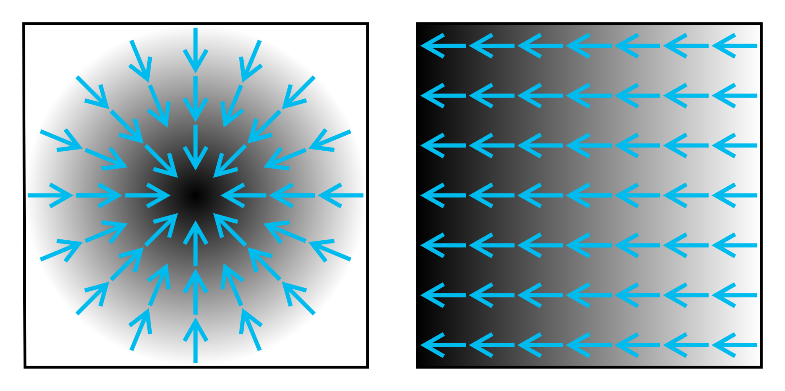

Puedes ver los cambios realizados en diferentes versiones del
documento aquí.
Prefacio
Este documento ha sido preparado por Pedro Contreras Corral como
material de apoyo para el curso Métodos Matemáticos para Geofísicos. En
cuanto a su contenido, se han utilizado como base las notas de clase del
curso Física Matemática II del profesor Guillermo Rubilar, y las
profesoras Ariana Muñoz e Ivana Sebestova, además de los apuntes
preparado por Alejandro Saavedra como ayudante de esta última, y por
Pedro Contreras como docente encargado el semestre 2025-1. También han
sido utilizadas como referencia las diapositivas del profesor Roberto
Navarro, quien dictó el curso de Métodos Matemáticos el año 2024, y las
notas de clase de Física Matemática I del profesor José Barea.
También se han usado como base (en mayor o menor medida) los textos
establecidos en la bibliografía, Mathematical Methods for
Physicists de Arfken, Mathematical Methods for Physics and
Engineering de Riley y Mathematical Physics de Butkov.
Junto a ellos, se han usado algunas ideas del libro Mathematical
Physics, a Modern Introduction to its Foundations de Hassani.
Es posible que este documento contenga algunos typos y errores
menores. En caso de que estos se presenten, serán mencionados en clases
para que puedan tomar notas al respecto, y serán corregidos en versiones
posteriores del documento. De igual manera, algunas demostraciones no se
encuentran escritas, de modo que derivo el detalle de ellas a las
fuentes respectivas cuando lo considere necesario.
Agradezco las contribuciones de Lixin Lai, Fernanda Mella y Amaro
Díaz al facilitarme sus notas y el material del curso de la profesora
Ivana Sebestova, así como los de José Huenchual por sus notas del curso
de la profesora Ariana Muñoz. Además, agradezco a las y los estudiantes
de la edición 2025 de Física Matemática II, por haberme permitido
realizar correcciones mayores a los contenidos en algunos capítulos del
apunte de dicho curso.
“...El trabajo en equipo se convertirá en el método de
investigación científica."
Atribuída a John Desmond Bernal.
Análisis Vectorial
Hasta ahora, probablemente poseen una familiaridad trabajando con
coordenadas cartesianas en el espacio
.
Para definir un punto en este sistema, utilizamos las coordenadas
,
que corresponden a la proyección del vector posición
sobre cada uno de los ejes cartesianos, rectas perpendiculares entre sí.
Si mantenemos constante una de estas coordenadas, definimos un
plano perpendicular al eje que se ha mantenido constante.
De esta forma, un punto
con coordenadas
corresponde también a la intersección de los planos
,
,
,
perpendiculares a los ejes
,
y
,
respectivamente.
En este sistema, superficies más generales pueden describirse
implícitamente mediante expresiones del tipo
,
donde
es un valor constante. Por ejemplo, una esfera de radio
puede ser descrita por la expresión
.
Distintos valores de
permiten describir una familia de superficies, con la misma
naturaleza, pero diferentes posiciones.
Antes de entrar más de lleno en la discusión, recordemos e
introduzcamos algunas definiciones.
Se denomina delta de Kronecker al elemento
,
definido en un espacio vectorial de
dimensiones como $$\delta_{ij} =
\begin{dcases}
1, \qquad i = j \\
0, \qquad i \neq j
\end{dcases} \ .$$
Este elemento puede representarse de forma matricial como la matriz
identidad del espacio de dimensión
.
Sea un conjunto de vectores unitarios
de un espacio
-dimensional.
Diremos que este forma una base ortonormal si al
realizar el producto escalar entre elementos del conjunto, se cumple la
relación
donde
es la delta de Kronecker.
Dado un sistema coordenado en un espacio de
dimensiones, podemos definir el vector posición
,
que une el origen del sistema con punto con coordenadas
,
con
como
donde las componentes del vector en la base
pueden expresarse como
Durante este capítulo, nos limitaremos a trabajar en tres
dimensiones, pues son las necesarias para describir la gran mayoría de
los fenómenos físicos que pueden interesarnos.
1.50.5Coordenadas curvilíneas
ortogonales
Supongamos que existen tres superficies descritas por las ecuaciones
que se intersectan en el punto
.
Es decir, la única solución que satisface simultáneamente las ecuaciones
anteriores es
.
Si las funciones
son monovaluadas y con derivadas continuas, entonces estas serán
invertibles, y podremos definir una correspondencia entre las
coordenadas cartesianas
y los valores
.
Se denominan superficies coordenadas a las funciones
de la forma
donde
,
cuya intersección define un sistema de coordenadas
curvilíneas
.
Si la intersección es en ángulo recto para todos los puntos,
se dice que el sistema es ortogonal.
De esta forma, dado un punto
con coordenadas cartesianas
,
y con coordenadas curvilíneas
,
podemos establecer la relación
y el vector posición
podrá expresarse como
¿Podremos expresar el vector posición en términos de vectores
unitarios, tangentes a cada una de las superficies coordenadas?
Se denominan vectores direccionales, denotados por
,
a aquellos que son tangentes a las superficies coordenadas
.
Matemáticamente, escribimos
donde
es el vector posición.
Se denominan factores de escala
a los módulos de los vectores direccionales,
De esta forma, el vector posición puede escribirse en términos del
sistema de coordenadas curvilíneas como
donde, en general,
,
pues las componentes del vector en este nuevo sistema coordenado se
obtienen como,
Observación Las coordenadas
no necesariamente tendrán dimensiones de longitud. Para compensar esto,
los factores de escala pueden tener alguna dimensión dada, de modo que
el producto
sí tenga unidades de longitud.
1.20.3Elementos infinitesimales
Dado el vector posición
de un punto con coordenadas curvilíneas
,
se define un desplazamiento infinitesimal o
elemento de longitud como
donde
.
Para un sistema de coordenadas curvilíneas ortogonales, se
define un elemento de arco en el sistema de coordenadas
como
Para un sistema de coordenadas curvilíneas ortogonales
,
se definen los elementos de superficie ortogonales a la
superficie
como
o de forma más explícita,
Dado un sistema de coordenadas curvilíneas ortogonales, se define el
elemento de volumen como
1.20.3Coordenadas cilíndricas
En coordenadas cilíndricas
,
el vector posición de un punto con coordenadas cartesianas
puede representarse como
de donde se deduce que la relación entre ambos sistemas es
donde
,
,
y
.
A partir del vector posición, podemos obtener los vectores
direccionales
con respectivos factores
de escala
Un elemento de longitud será dado por
y un elemento de volumen será
Sistema coordenado cilíndrico. Se puede apreciar que un
punto en este es completamente determinado por la intersección de dos
planos
(
constante y
constante) y una superficie cilíndrica
(
constante). Además, es posible apreciar la dirección de los tres
vectores unitarios,
,
y
.
1.20.3Coordenadas esféricas
En coordenadas esféricas
,
el vector posición de un punto con coordenadas cartesianas
puede representarse como
de donde se deduce que la relación entre ambos sistemas es
donde
,
,
y
.
A partir del vector posición, podemos obtener los vectores
direccionales
con respectivos factores
de escala
Un elemento de longitud será dado por
y un elemento de volumen será
Sistema coordenado esférico. Se puede apreciar que un punto
en este es completamente determinado por la intersección de un
(
constante), una superficie cónica
(
constante) y una superficie esférica
(
constante). Además, es posible apreciar la dirección de los tres
vectores unitarios,
,
y
.
1.50.5El operador Nabla
Existen algunas operaciones diferenciales que puedes ser
desarrolladas en campos escalares y vectoriales, y tienen una variedad
de aplicaciones en física. Las tres más importantes corresponden al
gradiente de un campo escalar, la divergencia de un
campo vectorial, y el rotacional de un campo vectorial.
Definiremos estas operaciones desde el punto de vista matemático,
pues si bien pueden obtenerse a partir de nociones físicas y
geométricas, en honor al tiempo no será posible hacer esta revisión.
Para más detalles de estas, puede ver el capítulo 11 de Riley , o el capítulo 5 de Barea
.
Se define el operador nabla (o del en
inglés) en coordenadas cartesianas como
1.20.3Gradiente
El gradiente de un campo escalar,
,
corresponde a la operación que entrega como resultado la dirección
de mayor cambio en el campo
.
En el caso que el campo sea constante (como un plano), entonces el
gradiente corresponde al vector perpendicular a la superficie
definida por el campo
.

Ilustración del concepto de gradiente. Nuestro campo escalar
es representado por la escala de grises, donde un color más oscuro
denota un mayor valor. Las flechas indican la dirección del gradiente en
cada punto donde ellas aparecen, el que siempre apunta en la dirección
de mayor cambio en la intensidad de la escala.
En coordenadas cartesianas, el gradiente puede escribirse como
mientras que en un sistema curvilíneo ortogonal podrá representarse como
Podemos representar cambios infinitesimales en el campo
,
por ejemplo entre dos puntos
y
infinitesimalmente cercanos, mediante el diferencial
:
donde
representa un vector que conecta por puntos
y
.
Notemos que
donde
es el ángulo que forman los vectores
y
.
Integremos ambos lados de la igualdad a lo largo de una curva que una
los puntos
y
.
Para el lado izquierdo, tenemos que
por lo que en la igualdad resultará en
de modo que la segunda integral, que es una integral de línea, no
depende del camino seguido, sino únicamente de los puntos de inicio y
término.
Decimos que un campo vectorial es conservativo si la
integral de línea entre los puntos
y
es independiente del camino escogido entre ambas.
Por ello, el gradiente de un campo escalar es un campo vectorial
conservativo.
1.20.3Divergencia
Se define la divergencia de un campo vectorial,
como una medida del flujo neto del campo
a través de una superficie cerrada.
En coordenadas cartesianas, la divergencia viene dada por
mientras que en coordenadas curvilíneas ortogonales puede representarse
como
donde en el sistema coordenado,
.
Siguiendo la interpretación de la divergencia como un flujo,
tendremos que si
,
diremos que existe una fuente de líneas de campo en
dicha región. En cambio, cuando
,
diremos que existe un sumidero en la región.
Divergencia de tres campos vectoriales. Nótese que el signo
de esta cantidad depende del número de vectores entrantes y
salientes de una superficie imaginaria que encierre al
campo.
Dado un campo vectorial
,
decimos que este es solenoidal si
Ejemplo 1.1. La divergencia del vector posición
puede obtenerse fácilmente en coordenadas cartesianas, de modo que
Dado que la divergencia de un vector es un escalar, este resultado es
válido para cualquier sistema de coordenadas.
Relacionado a la divergencia de un campo vectorial, existe un teorema
que nos permite establecer una equivalencia entre integrales de
superficie sobre una superficie
cerrada, y una integral de volumen sobre la región
encerrada por
.
(Teorema de la divergencia, o de
Gauss). Dado un campo vectorial
,
continuo y diferenciable, la integral de su divergencia sobre una región
es igual a la integral de superficie de la componente normal de
sobre la superficie
que encierra a la región
:
Ejemplo 1.2. Siguiendo con el resultado obtenido en
el ejemplo anterior, podemos utilizar el teorema de Gauss para una
región
arbitraria encerrada por una superficie
,
gracias a lo cual obtenemos que
donde
es el volumen de la región
.
Reordenando términos, podemos concluir que el volumen de esta región se
puede obtener como
1.20.3Rotacional
El rotacional de un campo vectorial,
,
correesponde a una medida de la densidad de circulación de
alrededor de una curva
,
que encierra una superficie
.
De forma más coloquial, el rotacional mide la tendencia del campo
a inducir una rotación alrededor de un punto
.
En coordenadas cartesianas, este toma la forma
o en coordenadas
curvilíneas generalizadas,
Dado un campo vectorial
,
decimos que este es irrotacional si
De forma similar al teorema de Gauss, el teorema de Stokes es una
forma de conectar una integral de línea de un campo
a lo largo de una curva cerrada
con la integral de superficie del rotacional de
sobre la superficie
encerrada por
.
(de Stokes, o del rotacional).
Consideremos un campo vectorial
continuo y diferenciable. Entonces, la integral de línea alrededor de
una curva cerrada
es igual a la integral de superficie de la componente normal de su
rotacional sobre cualquier superficie
limitada por la curva
:
(a) Ilustración del Teorema de Stokes. La superficie
se encuentra delimitada por la curva
.
El sentido en el que se recorre la curva y el vector normal a la
superficie se encuentran relacionados entre sí mediante la regla de la
mano derecha. (b) Una forma alternativa de representar la obtención del
vector normal
mediante el uso de un vector perpendicular a la superficie,
.
En este caso, los diferenciales
y
están relacionados entre sí. Una vez fijamos el sentido en que
recorreremos el contorno utilizando el vector
,
el vector
deberá seguir el sentido establecido por la regla de la mano
derecha.
Ejemplo 1.3. Considere el campo vectorial
.
Calcule la integral de superficie del rotacional de
sobre la superficie de la figura inferior.
Solución.
Lograr parametrizar esta superficie no es tarea sencilla, pues
tampoco tenemos su forma funcional. Sin embargo, podemos hacer uso del
Teorema de Stokes para solucionar dicha integral.
Notemos que la superficie es cerrada, y su único contorno es un
círculo,
,
de radio 1 en el plano
.
Esta curva puede ser entonces parametrizada como
,
con
.
De esta forma, tenemos que
resultado que es
independiente de la orientación de nuestro sistema coordenado.
Como vimos en el ejemplo anterior, a pesar de lo complicada que pueda
ser una superficie, gracias al teorema de Stokes podemos simplificar los
cálculos algebraicos. Es más, para cualquier superficie suave
,
delimitada por una curva
cerrada, entonces
debido a que la integral de línea sobre el contorno de una superficie
suave se anulará.
1.20.3Identidades vectoriales
Dados los campos escalares
y
,
y los campos vectoriales
y
,
algunas identidades que surgen de la aplicación del operador nabla sobre
sumas o productos de estos campos son las siguientes:
.
.
.
.
.
.
.
,
donde
De igual forma, podemos estudiar las aplicaciones sucesivas del
operador nabla sobre campos escalares o vectoriales. Enumeraremos
únicamente aquellas cantidades que sí tiene sentido definir:
Divergencia de un gradiente,
,
operación que es conocida como laplaciano de un campo
escalar. En coordenadas curvilíneas ortogonales,
Rotacional de un gradiente,
,
pues las derivadas parciales cruzadas que surgirán se cancelarán entre
sí. En consecuencia, todo gradiente es irrotacional.
Gradiente de una divergencia,
.
Divergencia de un rotacional,
,
donde nuevamente las derivadas parciales cruzadas se anularán. En
consecuencia, todo rotacional es solenoidal.
Rotacional de un rotacional,
.
1.50.5Teoría del potencial
Cerramos este capítulo explicando la importancia de los resultados
aquí descritos. Consideremos un campo escalar
.
Al calcular su gradiente, obtenemos un campo vectorial, que llamaremos
.
De aquí, podemos inferir dos resultados:
El campo vectorial resultante es irrotacional, pues
.
Por definición,
,
de modo que para cualquier curva cerrada,
.
Del segundo resultado, podemos concluir que la integral de línea
dea lo largo de cualquier trayectoria que una los puntos
y
proporciona siempre el mismo valor, y es independiente de la
trayectoria escogida. Nos referiremos a este comportamiento
diciendo que el campo
es conservativo.
Dado un campo vectorial
,
son equivalentes las tres afirmaciones:
es un campo conservativo.
es irrotacional.
Existe un campo escalar
,
denominado potencial escalar, tal que
.
Ejemplos del resultado de este teorema son:
El campo eléctrico,
,
que se puede definir a partir de un potencial electrostático
,
tal que
.
Toda fuerza
,
que se encuentre asociada a una energía potencial
,
tal que
.
Algunas de ellas son la fuerza elástica, la fuerza gravitacional o la
fuerza eléctrica.
1.20.3Teorema de Helmholtz
Bajo ciertas condiciones, el resultado obtenido anteriormente no será
suficiente. En dichas condiciones, es posible definir una construcción
más complicada utilizando el siguiente teorema.
(de Helmholtz). Sea
un campo vectorial diferenciable, con derivadas parciales continuas, y
cuya divergencia y rotacional se anulan en el límite
.
Entonces, podemos descomponer
en una componente irrotacional, y en una componente
solenoidal, dependientes de un potencial
escalar
y un potencial vectorial
,
respectivamente:
donde
Corolario 1.1. Un campo vectorial
solenoidal, puede representarse en términos de un potencial vector
,
tal que
Introducción a
los
Tensores Cartesianos
Una de las nociones más importantes que tenemos en física clásica es
el hecho de que los fenómenos físicos son los mismos, y no deben
cambiar según el observador, más allá de que las componentes de las
cantidades que los describen puedan hacerlo. Particularmente, nos
centraremos en las transformaciones ortogonales de un sistema
coordenado, referidas de forma más común como
rotaciones.
Por ejemplo, un vector que describe la posición de un objeto en
función del tiempo puede ser diferente según el sistema de coordenadas
en que se lo describa, pero el movimiento físico del objeto
seguirá siendo el mismo.
1.50.5Transformaciones
Ortogonales
Cuando estamos trabajando con coordenadas cartesianas, podemos
definir un nuevo sistema coordenado, que llamaremos
y cuya base es
,
que corresponde a una rotación del sistema
definido anteriormente, como se ve en la figura 2.1.
Una transformación ortogonal de dos bases ortonotmales en 3
dimensiones,
y
Respecto de esta nueva base, un vector
cualquiera puede ser descompuesto en sus componentes
en la base
,
Dado que, si bien dan origen a sistemas de coordenadas diferentes,
ambas bases se encuentran en el mismo espacio vectorial, ¿Cómo podemos
relacionar ambas bases entre sí? Para ello, haremos uso de una
matriz de transformación, definida como
De este modo, un vector de la base
puede escribirse también en términos de la base
,
por lo que podemos reescribir el vector
como
1.20.3Convenio de suma de
Einstein
Antes de continuar la discusión, es útil introducir el
convenio de suma de Einstein, que establece que en toda
expresión donde se repitan dos índices iguales, existe una suma
implícita sobre todo el rango de variación del índice. Es más, el
índice de suma es una etiqueta arbitraria, por lo que puede ser
renombrada a conveniencia.
Además, dado que existe una suma implícita, podemos aplicar la delta
de Kronecker para reemplazar índices en una multiplicación, de modo que
La discusión hecha hasta ahora es válida para cualquier
transformación de coordenadas entre dos bases distintas. Para los
efectos de este curso, nos interesa trabajar únicamente con
transformaciones ortogonales.
Una transformación ortogonal es aquella
transformación de cambio de base que permite convertir una base
ortonormal
en una nueva base ortonormal
.
Para asegurarnos que la transformación [eq:transformacion-coordenadas]
sea una transformación ortogonal, debe además satisfacer que
o bien, matricialmente,
que al
calcular el determinante, observamos que
de modo que una transformación ortogonal deberá satisfacer que
,
caso en que se denomina transformación propia, o bien que
,
lo que se conoce como transformación impropia.
En particular, de [eq:condicion-matricial]
podemos observar que para una transformación ortogonal,
,
es decir, la transpuesta de la transformación coincide con su inversa,
de modo que también se satisface que
o en notación indicial,
1.50.5Tensores Cartesianos
Hasta ahora, hemos discutido las propiedades de los vectores,
elementos con los que ya somos familiares. Sin embargo, seguimos sin
responder la incógnita de ¿qué es un tensor?. Para ello,
introduzcamos una operación entre vectores.
Dados dos vectores
y
,
se define el producto externo entre ambos vectores como
la cantidad
Como podemos ver de la definición anterior, necesitamos de dos
índices para definir el producto externo. ¿Qué ocurre con esta
cantidad si, en lugar de utilizar la base
,
utilizamos la base
?
En otras palabras, ¿cómo transforma
bajo transformaciones ortogonales? Notamos que
Observamos pues, que
transforma de manera similar a los vectores bajo transformaciones
ortogonales. A cantidades que siguen una regla de transformación de este
tipo, las llamamos tensores (cartesianos) de rango 2, pues
requerimos de dos matrices de transformación para definirlas
adecuadamente. Observamos que, para un espacio de
dimensiones, estos elementos tendrán
componentes.
Esta noción puede ampliarse a más dimensiones, según la siguiente
definición,
Dado un espacio de
dimensiones, el conjunto de
cantidades
definidas en cada sistema ortogonal de coordenadas, son las componentes
de un tensor cartesiano de rango
si, bajo transformaciones ortogonales, sus valores siguien la regla de
transformación
Gracias a esta definición, observamos que los
vectores, que tienen una sola matriz de transformación
en su definición [eq:transformacion-vector],
son tensores de rango 1. A su vez, los
escalares son cantidades que no se ven modificadas
frente a una transformación de coordendas, de modo que
.
Por ello, podemos considerarlos tensores de rango 0.
Ejemplo 2.1. Tensor de inercia.
Consideremos un cuerpo con densidad
,
contenido en una región
que rota rígidamente respecto de un eje con dirección
con velocidad angular
.
Entonces, podemos hallar su momento angular respecto al origen del
sistema (ubicado sobre el eje de rotación) como
Usando la identidad
,
podemos escribir
o en términos de las componentes del vector,
es decir,
donde
es el tensor de inercia definido como
¿Es esta cantidad efectivamente un tensor cartesiano? Revisemos cómo
transforma bajo una transformación ortogonal,
de modo que efectivamente
transforma como un tensor cartesiano.
1.20.3Propiedades
En este contexto, vale la pena mencionar con algo más de detalle a
dos propiedades.
Propiedades de los tensores cartesianos.
Si todas las componentes de un tensor se anulan en un sistema
coordenado ortogonal, ellas se anularán en todo sistema
coordenado ortogonal. Esta propiedad nos interesa, ya que nos
indica que la anulación de un tensor es una propiedad
intrínseca de este. De esta propiedad surge la importancia de
utilizar tensores en Física, pues nos permite plantear leyes que no
dependen del sistema coordenado en que trabajamos, sino únicamente
del fenómeno estudiado.
Por ejemplo, podemos estar estudiando el momento de inercia de un
cuerpo en movimiento, el cual es un tensor de rango 2. Si diera la
casualidad de que este es cero en algún sistema coordenado ortogonal,
esto quiere decir que, en cualquier sistema coordenado
ortogonal, el cuerpo no se encuentra rotando.
Existen algunos tensores invariantes o
isotrópicos, los cuales tienen siempre las mismas
componentes en cualquier sistema coordenado. Un ejemplo de
estos es la delta de Kronecker, pues en cualquier sistema coordenado
tendrá las mismas componentes, 1 si
y 0 si
.
En efecto, podemos observar que la delta de Kronecker transforma como
1.50.5Álgebra Tensorial
Dicho rápido y sencillo, hemos visto que los tensores de rango 1 y
rango 2 se comportan como vectores columna y como matrices,
respectivamente. Por ello, esperaríamos que sea posible definir
operaciones tensoriales similares a las definidas para estos elementos,
incluyendo la posibilidad de construir tensores a partir de otros.
Adición y sustracción. Se define la adición (o
suma) y sustracción (o resta) de dos tensores del mismo orden
componente a componente, es decir,
Permutación de índices. La operación de permutar
dos índices de un tensor de rango
,
define un nuevo tensor de rango
.
Es decir, dado un tensor
de rango
,
la cantidad
es también un tensor de rango
.
Producto tensorial, o directo. De manera similar
al producto externo de dos vectores que calculamos
anteriormente, podemos definir el producto entre dos tensores de
diferente rango, digamos
y
,
lo que permite formar un nuevo vector de rango
,
En este caso, es relevante respetar la posición de los índices en el
producto, pues en general el tensor
será distinto al vector
,
como consecuencia de la permutación de índices.
Esta operación incluye, por supuesto, el producto entre un tensor de
rango 0 (un escalar) y un tensor de rango
,
definiendo el prodcuto por un escalar.
Contracción de índices. El producto escalar
entre dos vectores nos entrega un escalar en lugar de un tensor de orden
2, como consecuencia de la repetición de índices en el producto. De
manera similar, la repetición de dos índices dentro de un tensor de
orden
(digamos, el
-ésimo
y el
-ésimo
índice), es equivalente a un tensor de orden
,
o de forma equivalente,
Ley del cociente. Consideremos el caso en que
tenemos una expresión de la forma
donde sabemos que
y
son tensores de rango
y
,
respectivamente, pero desconocemos si
es un tensor. La ley del cociente establece que si la relación [eq:ley-cociente] es válida en
cualquier sistema de coordenadas, entonces
es un tensor de orden
.
La demostración (para el caso
)
puede ser hallada en el capítulo 26, sección 7 de Riley .
Simetría. Cuando un tensor no cambia bajo la
permutación de dos de sus índices,
se dice que este es simétrico respecto a dichos índices. Si, en
cambio,
decimos que el tensor es antisimétrico respecto de dichos
índices. En general, un tensor de rango
puede escribirse como la suma de un tensor simétrico y un tensor
antisimétrico respecto de la misma permutación de índices, de modo que
En física, a veces es común utilizar la siguiente notación,
donde los índices entre
paréntesis o corchetes son los índices respecto de los cuales el tensor
es simétrico o antisimétrico.
Un tensor completamente simétrico de rango
es aquel que es simétrico respecto a la permutación de cada par de
índices. Este tendrá
componentes linealmente independientes.
De forma análoga, un tensor completamente
antisimétrico de rango
es aquel que es antisimétrico respecto a la permutación de cada par de
índices. Este tendrá
componentes linealmente independientes. En particular, un tensor de
rango
,
tendrá una única componente linealmente independiente.
1.50.5Pseudovectores y
pseudotensores
Hasta ahora, de manera implícita, hemos utilizado transformaciones
ortogonales propias, es decir, que solo rotan el sistema, pero
no modeifican la orientación de los tensores. Sin embargo, al considerar
transformaciones impropias, que no solo rotan el sistema sino
que realizan una inversión de coordenadas o reflexión
().
Cuando también incluimos este tipo de transformaciones, los vectores
siguen cumpliendo la regla de transformación [eq:transformacion-vector].
Sin embargo, existen ciertas cantidades físicas que comúnmente
supondríamos como vectores, que no transforman de igual
manera bajo una reflexión, como es el caso de aquellas
relacionadas a cantidades angulares, como la velociadad
angular, el torque o el momento angular.
Las cantidades que transforman según la regla
se denominan pseudovectores, o vectores
axiales.
De forma análoga, es posible extender esta noción a tensores y
pseudotensores.
Los elementos que transforman según la regla
se denominan pseudotensores.
1.20.3Propiedades
Propiedades de los pseudotensores.
La suma y la diferencia de dos pseudotensores del mismo rango es
también un pseudotensor del mismo rango.
El producto tensorial de dos pseudotensores es un tensor
cartesiano.
El producto tensorial de un pseudotensor y un tensor es un
pseudotensor.
La contracción de dos índices de un pseudotensor define un nuevo
pseudotensor.
Un pseudoescalar es una cantidad que cambia de
signo bajo una transformación impropia.
En física, es común considerar únicamente transformaciones
propias. En estos casos, la distinción entre tensores y pseudotensores
no es necesaria.
1.20.3Símbolo de Levi-Civita
Símbolo de Levi-Civita En un espacio
dimensional,
se define el símbolo de Levi-Civita como un objeto de
índices totalmente antisimétrico, es decir,
tal que en todo sistema de coordenadas,
De forma equivalente, se puede definir como $$\varepsilon_{i_1 \dots i_n} = \begin{dcases}
1, \qquad \text{si } i_1 \dots i_n \text{ es una permutación
par de } 12 \dots n \ , \\
-1, \quad \text{si } i_1 \dots i_n \text{ es una permutación
impar de } 12 \dots n \ , \\
0, \qquad \text{en otro caso} \ .
\end{dcases}$$
Propiedades del símbolo de Levi-Civita.
El símbolo de Levi-Civita puede utilizarse para calcular
determinantes, mediante la relación
El símbolo de Levi-Civita transforma como un pseudotensor.
De la propiedad 1, se desprende que el símbolo de Levi-Civita
transforma, bajo una transformación arbitraria, como
Como en las transformaciones ortogonales,
,
concluímos que el símbolo de Levi-Civita transforma como un
pseudotensor.
El símbolo de Levi-Civita puede ser utilizado para representar
productos vectoriales entre dos vectores en notación tensorial, de modo
que si
,
podemos escribir
Como consecuencia, todo vector que se obtiene a partir del producto
vectorial entre dos vectores, es un pseudovector, lo que explica
por qué las cantidades angulares se comportan como
pseudovectores.
El símbolo de Levi-Civita satisface la identidad
de
donde es directo hallar que el producto de dos símbolos de Levi-Civita
se puede hallar como
En tres dimensiones, el símbolo de Levi-Civita satisface las
identidades
1.20.3Tensores duales
A cualquier (pseudo-)tensor totalmente antisimétrico de rango
en
dimensiones se le puede asociar un (pseudo-)tensor totalmente
antisimétrico de rango
,
pues ambos tienen el mismo número de componentes linealmente
independientes.
Si
es un tensor totalmente antisimétrico de rango
,
se define un pseudotensor dual de rango
como
mientras que la transformación inversa se define como
Cuando trabajamos en tres dimensiones, a cualquier tensor de rango 3
totalmente antisimétrico,
,
le podemos asociar un pseudoescalar dual
,
tal que
y a cualquier tensor antisimétrico
se le puede asociar un pseudovector
,
tal que
y viceversa.
En Física, el uso de tensores y sus duales nos permite tener
cantidades diferentes que contienen la misma información, y que pueden
ser útiles en diferentes contextos. Por ejemplo, el momento
multipolar magnético de orden 1,
,
contiene la misma información que el pseudovector momento
magnético, definido como
.
1.50.5Análisis tensorial
En el curso de Física Matemática I, ya estudiaron la noción de
análisis vectorial, que correspondía al uso del operador nabla
en diferentes sistemas coordenados. En este, hicieron uso de las
nociones de campo escalar y campo vectorial. Estas
nociones pueden también extenderse a elementos de mayor rango mediante
los campos tensoriales.
Se define un campo tensorial como la función que
asocia a cada punto del espacio con un tensor
,
es decir,
1.20.3Derivación
Dado que un campo tensorial de rango
consta de
cantidades definidas en cada punto del espacio, podemos derivar cada una
de estas cantidades respecto a las
coordenadas del espacio, obteniendo
derivadas parciales
que forman un tensor cartesiano de rango
bajo transformaciones ortogonales. En efecto,
Usando ahora la regla de
la cadena, tenemos que
de modo que
comprobando así que
transforma como un tensor de orden
.
También podemos calcular la derivada de un tensor de rango
respecto de un parámetro
independiente de las coordenadas. En este caso, el resultado es
también un tensor de orden
,
De una manera similar, podemos operar sobre este nuevo tensor
derivada con todas las operaciones tensoriales disponibles. En
particular, podemos definir el operador nabla en un espacio de
dimensiones. En notación indicial, dado un campo escalar
y un vector
,
tenemos
1.20.3Integración
Al igual que tenemos integrales vectoriales para campos
vectoriales, que puedn dar como resultado un vector o un escalar,
podemos definir integrales tensoriales para campos tensoriales.
En particular, revisaremos las integrales de línea, superficie y
volumen.
Integrales de línea
Una integral de línea sobre un campo tensorial
de rango
a lo largo de una curva
definida por un parámetro
tal que
,
genera una tensor de rango
definido como
o de forma explícita,
En efecto, observamos que
Integrales de
superficie
Dado un (pseudo)vector
unitario y normal a la superficie
en el punto
,
podemos definir la integral de superficie de un campo tensorial
de rango
,
que será un (pseudo)tensor de rango
,
como
donde
es el elemento de superficie que, por definición, es un escalar.
Comprobamos que esta integral es un tensor, ya que
Integrales de
volumen
En este caso, dado un volumen
dimensional,
la integral de volumen de un campo tensorial
de rango
,
es también un tensor de rango
,
definido como
Efectivamente, observamos que
Teoremas integrales
El teorema fundamental del cálculo en varias
variables puede ser escrito en notación tensorial como
donde
es una curva que une los puntos
y
.
El teorema de Gauss en 3 dimensiones puede
escribirse como
y puede generalizarse al caso en el que no necesariamente exista una
contracción de índices (no necesariamente hay una divergencia) como
El teorema de Stokes se puede escribir de una manera
similar, escribiendo los casos donde hay contracción de índices,
y el caso en que no necesariamente exista una contracción,
1.50.5Covarianza y
contravarianza
En la sección anterior, vimos que podemos reescribir un vector
en términos de una segunda base ortonormal
como
Comparando esta expresión con
,
observamos que las componentes de un vector transforman como
donde la
inversión de los índices en las componentes de la matriz representa que
estamos considerando la matriz transversa.
Nos gustaría poder encontrar una expresión explícita para dicha
matriz. Para ello, podemos derivar la expresión [eq:transformacion-componentes]
respecto a las coordenadas
,
obteniendo
mientras que la transformación inversa satisface
De este modo, podemos reescribir la ecuación [eq:transformacion-componentes],
con lo que las componentes de los vectores transforman, bajo
transformaciones ortogonales, como
Uno podría esperar que todos los vectores transformaran según esta
regla. Sin embargo, veamos qué ocurre para el vector gradiente de un
campo escalar,
,
donde
.
Tenemos, por regla de la cadena,
que es una ley de transformación diferente. Sin embargo, ambas
cantidades corresponden a vectores. ¿Cómo explicamos esta
diferencia?
El hecho radica en que, en efecto, ambas cantidades son vectores
en coordenadas cartesianas, pero no necesariamente en
cualquier sistema de coordenadas. Por ello, es conveniente
introducir las nociones de vectores covariantes y
vectores contravariantes. En este curso esta distinción
no es necesaria, pero quienes deseen trabajar en gravitación o en altas
energías, deberán comenzar a tener en cuenta estas nociones.
Un vector
es denominado contravariante cuando, al ser sometido a
una transformación ortogonal, transforma según la regla
y se denomina covariante cuando transforma según la
regla
Las componentes del vector posición siempre transforman como vectores
contravariantes.
Al trabajar en sistemas no cartesianos, es común representar los
vectores contravariantes con superíndices en lugar de subíndices, de
modo que las reglas [eq:contravariante] y [eq:covariante] se suelen escribir
como
Al utilizar esta convención, la suma se representa al tener
índices cruzados, es decir, índices repetidos tanto como
superíndice y como subíndice.
Series Numéricas y
Funcionales
El concepto de serie hace referencia a sumas de
infinitos términos, donde los sumandos pueden ser números
(series numéricas) o funciones, comúnmente polinomios
(series funcionales). Pese a la naturaleza infinita de estas
sumas, existen ciertas condiciones bajo las cuales el resultado es un
valor definido, caso en el que decimos que la serie
converge. En este capítulo, discutiremos cómo
determinar si una serie converge, así como algunos resultados de
interés.
1.50.5Series numéricas
Sea
una sucesión de números reales. Se define la sucesión de sumas
parciales
por
Cuando la suma
es realizada sobre infinitos términos, nos referimos a la
serie
,
con término general
.
Decimos que una serie es convergente al valor
cuando
es decir, cuando la suma infinita se acerca al valor
.
En cambio, si la suma se vuelve infinita, diremos que la serie
diverge.
Una serie se dice aritmética si la
diferencia
entre dos términos consecutivos cualesquiera es una constante,
.
Entonces, el término general de la serie será de la forma
donde
es el primer término de la serie.
La
ésima
suma parcial de una serie aritmética,
,
puede obtenerse como
Las series aritméticas infinitas son divergentes, pues
.
Una serie se dice geométrica si la razón
entre dos términos consecutivos cualesquiera es una constante,
.
Entonces, el término general de la serie tomará la forma
donde
es el primer término de la serie.
La
ésima
suma parcial de una serie aritmética,
,
puede obtenerse como
Observamos que, si tomamos el límite cuando
,
se presentan dos casos:
Si
,
entonces la serie converge a un valor
.
Si
,
entonces la serie diverge u
oscila.
Una serie se dice aritmética-geométrica cuando su
término general es de la forma
La
ésima
suma parcial será entonces dada por
Al igual que la serie geométrica, puede converger o diverger
dependiendo del valor de
:
Si
,
entonces la serie converge a un valor
.
Si
,
entonces la serie diverge u
oscila.
1.20.3Convergencia absoluta y
condicional
Una serie
se denomina absolutamente convergente si la serie
es convergente.
Una serie absolutamente convergente es una serie convergente. Es
decir, si
es convergente, entonces
también es convergente, y además,
Una serie
se denomina condicionalmente convergente si la serie
es divergente, pero
es convergente.
A diferencia de lo que ocurre al considerar sumas finitas, un
reordenamiento de términos en una serie condicionalmente convergente
puede inducir a que ella converja a diferentes valores reales.
Toda serie condicionalmente convergente se puede hacer converger a
cualquier número real
tras una reordenación adecuada.
Esta propiedad desaparece si la serie es absolutamente convergente,
pues su suma siempre será la misma.
Sea
una serie absolutamente convergente, con suma
.
Entonces, todo reordenamiento de la suma
es también absolutamente convergente, con suma
.
1.20.3Criterios de convergencia
comunes
Cuando trabajamos con series cuyos términos son únicamente valores
reales positivos
,
existe una amplia variedad de criterios para determinar si esta serie
converge o no. A continuación, enumeraremos algunos de los más
comunes.
Sin embargo, antes de entrar plenamente a la discusión, introducimos
el siguiente teorema
Si la serie
es convergente, entonces se cumplirá que
En caso de que el
-ésimo
término de una serie no converja cuando
tiende a infinito, entonces la serie deberá diverger.
(Criterio de comparación directa). Sea
una serie
.
Entonces,
Dada una serie convergente
,
tal que
,
para todo
,
entonces
es convergente.
Dada una serie divergente
,
tal que
,
para todo
,
entonces
es divergente.
(Criterio de comparación en el límite).
Sean dos series
y
,
tal que
Entonces,
Si
,
las dos series convergen o divergen simultáneamente.
Si
y
es convergente, entonces
es convergente.
Si
y
es divergente, entonces
es divergente.
(Criterio del cuociente, o de
D’Alambert). Dada una serie
,
sea
Entonces,
Si
,
entonces
es convergente.
Si
,
entonces
es divergente.
Si
,
entonces el criterio no es concluyente sobre la naturaleza de la
serie.
(Criterio de la raíz, o de Cauchy).
Dada una serie
,
sea
Entonces,
Si
,
entonces
es convergente.
Si
,
entonces
es divergente.
Si
,
entonces el criterio no es concluyente sobre la naturaleza de la
serie.
(Criterio de la Integral). Dada una
serie
,
sea
una función positiva y decreciente en el intervalo
tal que, para todo número natural
,
.
Entonces,
es convergente si y solo si
Un resultado interesante de este criterio, es que permite evaluar
fácilmente el error cometido al truncar la serie en el
ésimo
término, pues
Ejemplo 3.1. Series armónicas. Las
series armónicas son las series de la forma
donde
es un número real positivo.
Utilizando el criterio de la integral, podemos evaluar el valor de
para el cual la serie converge. En efecto, si integramos el argumento de
la serie, tenemos que $$\int_1^n
\frac{1}{x^\alpha} \, dx = \left\{ \begin{dcases}
\dfrac{n^{1-\alpha}-1}{1-\alpha} \ , \quad \text{si } \alpha
\neq 1 \ , \\
\ln n \ , \quad \text{si } \alpha = 1 \ .
\end{dcases} \right.$$
Podemos observar que, al tomar el límite cuando
,
el resultado de la integral converge solo si
,
de modo que las series armónicas solo convergen para
.
1.20.3Series alternadas
Una serie se dice alternada cuando los términos de
esta alternan su signo. Generalmente, son expresadas como
con
o
,
para todos los valores de
.
Para determinar la convergencia de una serie alternada, se utiliza el
criterio de Leibnitz:
(Criterio de Leibnitz). Dada una serie
alternada monótona decreciente
,
esto es, que la sucesión de los valores absolutos de sus términos es
decreciente:
tal que
Entonces, la serie es convergente.
Un resultado interesante de las series alternadas convergentes, es
que podemos estimar el error que se produce al aproximar la suma de la
serie por una suma parcial
.
Si una serie alternada es tal que
,
y
es la suma de esta serie, entonces el error vendrá dado por
1.20.3Álgebra de Series
Dadas dos series convergentes
y
,
y dados dos números reales
y
,
se cumplen las siguientes propiedades.
La serie
es convergente.
La serie
es convergente.
La suma
,
lo que muestra que la adición o remoción de un número finito de términos
a una serie no afecta su convergencia.
Si dos series son absolutamente convergentes, entonces la serie
,
donde
es absolutamente convergente, y se denomina el producto de
Cauchy de las series originales.
En general, derivar o integrar una serie término a término no
resultará en una serie con las mismas propiedades de
convergencia.
1.50.5Series funcionales
1.20.3Convergencia puntual y
uniforme
Dada una sucesión de funciones reales de variable real con el mismo
dominio
,
.
Para cada punto
del dominio, podemos construir una sucesión de números reales formada
por los valores de las funciones en este punto, es decir,
.
Sea
el conjunto de todos los puntos
para los que dicha sucesión converge. Llamaremos función
límite de la sucesión
a la función definida en
como
Puesto que el límite [eq:funcion-limite] ha sido
obtenido punto a punto y se ha almacenado en la función
,
diremos que la sucesión
converge puntualmente a
.
Una consideración importante es que esta función no
necesariamente heredará las propiedades de continuidad, derivabilidad e
integrabilidad de las funciones
.
Ejemplo 3.2. Pérdida de
continuidad. Consideremos las funciones
,
con
.
Si tomamos el límite cuando
,
podemos observar que $$f(x) = \lim_{n \to
\infty} f_n(x) = \left\{
\begin{dcases}
0 \ , \quad \text{si } 0 \leq x < 1 \ , \\
1 \ , \quad \text{si } x=1 \ .
\end{dcases}
\right.$$
De esta forma, observamos que pese a que las funciones
son continuas en
,
su función límite es discontinua en
,
pues su límite por la izquierda no corresponde con su valor en dicho
punto:
Ejemplo 3.3. Pérdida de
integrabilidad. Sean las funciones
,
definidas en el intervalo
.
Notamos que su función límite viene dada por
Si integramos las funciones
,
tendremos que
Luego, si tomamos el límite a la integral, tendremos que
mientras que la integral del límite será
Sea
una sucesión que converge puntualmente hacia
en
.
Diremos que ella converge uniformemente a
en el conjunto
si
es decir, la diferencia máxima entre
y
en todo el dominio
tiende a cero.
Dada una sucesión de funciones reales
con el mismo dominio
,
sea la suma parcial
Entonces,
si
converge puntualmente a una función
,
se dice que la serie de funciones
converge puntualmente a
.
si
converge uniformemente a una función
,
se dice que la serie de funciones
converge uniformemente a
.
(Criterio M de Weierstrass) Si
converge puntualmente hacia
en un intervalo
y existe una serie numérica convergente de términos positivos
tal que
,
para todo
y
.
Entonces,
converge uniformemente en
.
Ejemplo 3.4. Podemos estudiar la convergencia
absoluta y uniforme de la serie
Para verificar su convergencia absoluta, necesitamos que la serie
converja. Notemos que
pues
,
para todo
,
y para todo
.
Gracias a un criterio de comparación, observamos que como
se encuentra inferiormente acotada por 0 y superiormente acotada por una
serie convergente,
converge, y por ello converge absolutamente.
Para estudiar la convergencia uniforme, haremos uso del criterio
de Weierstrass.
La segunda condición del criterio se satisface al probar la
convergencia absoluta, por lo que basta probar la primera condición, es
decir, que la función converge puntualmente.
En efecto, tenemos que
de modo que como el límite anterior existe, según el criterio
de Weierstrass,
converge uniformemente.
La importancia de definir la convergencia uniforme tiene que ver con
la conservación de la continuidad e integrabilidad de la sucesión de
funciones. La derivabilidad, en cambio, requiere de cirtas condiciones
para ser preservada. Podemos resumir estas propiedades en el siguiente
teorema.
Sea la sucesión de funciones
,
y sea la serie
,
tal que ambas convergen uniformemente en un intervalo
a
y
,
respectivamente. Entonces,
Si cada función
es continua en
,
entonces
y
son continuas en
:
Si
,
Sean
Entonces,
converge uniformemente a
en
:
Si
,
y cada función
es continua en
,
entonces
Si las funciones
son derivables, y la sucesión
converge uniformemente a un punto
en
,
entonces
para todo
.
Si las funciones
son derivables, y la serie
converge uniformemente a un punto
en
,
entonces
Una forma conveniente de determinar la convergencia uniforme de una
serie funcional son los siguientes criterios.
Criterio de Dirichlet. La serie
converge uniformemente en
si
es una serie uniformemente acotada, es decir, existe un valor
tal que
,
para todo
y
,
y además
es una sucesión monótona de funciones uniformemente convergentes a cero,
,
para todo
.
Criterio de Abel. La serie
converge uniformemente en
si
es una serie uniformemente convergente en
,
y además
es una sucesión monótona de funciones uniformemente acotadas.
1.20.3Series de potencias
Se denomina serie de potencias a toda serie
funcional de la forma
Se denomina radio de convergencia de una serie de
potencias a la cantidad
que determina el intervalo donde la serie converge puntualmente.
Consideramos tres casos:
Si
,
entonces el dominio de convergencia corresponde a todos los números
reales.
Si
,
entonces la serie converge únicamente para
.
Si
es un número real no nulo, entonces el dominio de convergencia es el
intervalo abierto
.
Propiedades de las series de potencias.
Respecto a la convergencia de las series de potencias, ellas satisfacen
las siguientes propiedades:
En cualquier punto interior al dominio de convergencia, la serie
es absolutamente convergente,
En cualquier punto exterior al dominio de convergencia, la serie
diverge u oscila.
En los extemos del dominio de convergencia, la serie puede
converger, diverger u oscilar.
La serie es uniformemente convergente en
cualquier intervalo cerrado contenido en su dominio de
convergencia.
Respecto a la continuidad, derivabilidad e integrabilidad, se
satisface que
La serie es continua en cada punto de su dominio de
convergencia.
La serie es derivable término a término en cada punto de su
dominio de convergencia,
y su derivada tiene el mismo radio de convergencia.
La serie es integrable término a término en cualquier intervalo
cerrado contenido en su dominio de convergencia,
donde
.
Si dos series de potencias con sumas
y
poseen dominios de convergencia con alguna región en común, entonces las
series producidas por la suma, la diferencia o el producto de
y
convergen en la región en común.
Si dos series de potencias,
y
convergen a la misma función suma
en un entorno del punto
,
entonces las series coinciden términoa término,
1.20.3Expansión en serie de
Taylor
(de Taylor). Dada una función
con derivadas continuas en un intervalo
hasta el orden
.
Entonces, para un punto
,
puede aproximarse por la siguiente serie de potencias:
donde el resto de la expansión
es dado por
Cuando
,
la expansión toma el nombre de serie de Taylor
Ejemplo 3.5. Algunas series de Taylor comúnmente
utilizadas son
,
para todo
.
,
para todo
.
,
para todo
.
,
para
.
,
para
.
(del binomial). La función
,
donde
es un número real y
puede expandirse en una serie de Taylor de la forma
donde si
es un número entero positivo, entonces tendremos una sumatoria finita,
pues el coeficiente binómico se anulará cuando
.
Observación Cuando
es un número entero negativo, el coeficiente binómico toma la siguiente
forma:
Elementos de Cálculo
Complejo
A lo largo de la Historia, hemos desarrollado las matemáticas en
respuesta a las necesidades de cada época. Por ejemplo, los números
naturales y racionales (positivos) son una consecuencia directa de tener
que contar diferentes tipos de cosas: personas, animales,
herramientas, entre otras. Análogamente, surgió la necesidad de
describir partes de un todo, sobre todo cuando requerimos
dividir este todo: medio saco de harina, un tercio de terreno, entre
otros conceptos.
Con el tiempo, logramos sistematizar este tipo de relaciones mediante
el álgebra, lo que profundizó nuestra capacidad de abstracción y
permitió expresar conocimientos geométricos sin la necesidad de realizar
sus construcciones. Así, por ejemplo, sabemos que una parábola puede
representarse mediante una expresión de la forma
.
Al resolver escuaciones cuadráticas, nos encontramos con una variedad
de soluciones. Algunas veces, como en la ecuación
,
la solución corresponderá a un número irracional, como
1, que no puede ser expresado en
términos de fracciones exactas. Al reunir estos números irracionales con
los números racionales, formamos el conjunto de los números
reales,
.
Cualquier ecuación de segundo grado que posea raíces reales
corresponderá, al ser graficada, a una parábola que intersecta al eje
en al menos un punto, aquel donde
toma el valor de sus raíces.
En otras ocasiones, podemos encontrarnos con ecuaciones de la forma
,
cuya gráfica no intersectará al eje
en ningún punto, por lo que decimos que esta función no tiene raíces
reales. Sin embargo, esto no implica que no tenga soluciones, pues
podemos decir que
es una solución. Durante siglos (la mayor parte de la Edad Moderna),
este tipo de soluciones fueron descartadas, pues los matemáticos
pensaban que las raíces de un número negativo eran un sinsentido, y
corresponderían a números imaginarios.
No sería hasta mediados del siglo XVIII, y sobre todo durante el
siglo XIX, que se dimensionaría la importancia de este tipo de
soluciones, dando origen al concepto de los números
complejos: números que engloban a los números reales, así como
también a estos números imaginarios, permitiendo resolver
ecuaciones sin solución.
En este capítulo, introduciremos el conjunto de los números
complejos, discutiremos sus propiedades, y la importancia de trabajar
con ellos.
1.50.5El conjunto de los números
complejos,
El conjunto de los números complejos, denotado por
,
corresponde a los pares ordenados
,
para los cuales la suma y el producto por un escalar
se definen de forma usual,
,
,
pero para los cuales se puede definir una operación de
multiplicación compleja,
Los elementos
de
se denominan números complejos,
se denomina su parte real, y se denota como
,
mientras que
se denomina su parte imaginaria, denotada como
.
Los números complejos pueden denotarse de forma gráfica en un
plano complejo, análogo al plano
,
donde el eje
corresponderá a la recta real y el eje
corresponderá a una recta imaginaria. En consecuencia, diremos
que un número complejo
que se ubica sobre la recta real es un número real
puro, mientras que un número complejo
que se ubica sobre la recta imaginaria es un número imaginario
puro.
Denotaremos a los “vectores unitarios” de cada uno de estos ejes como
para el eje real, y como
para el eje imaginario, donde
corresponde a la unidad imaginaria. De esta forma,
también podemos denotar
de forma binomial como
.
El conjunto de los números complejos
forma un cuerpo (o campo) conmutativo, es decir, dados
tres números complejos
,
y
cualesquiera, se satisfacen los siguientes axiomas:
La suma es conmutativa,
.
La suma es asociativa,
.
Existe un elemento neutro para la suma.
Cada número complejo
posee un elemento inverso para la suma.
La multiplicación compleja es conmutativa,
.
La multiplicación compleja es asociativa,
.
Existe un elemento neutro para la
multiplicación.
Cada número complejo
posee un elemento inverso para la
multiplicación.
La multiplicación es distributiva respecto a la
suma,
.
Demostración 4.1. Sean tres números complejos
,
y
cualesquiera.
Gracias a su representación gráfica, podemos ver que podemos definir
un número complejo en términos de unas coordenadas polares.
Para ello, primero debemos definir la operación de
conjugación.
Dado un número complejo
,
se define su complejo conjugado, denotado como
o
,
como
Un número complejo
puede representarse de forma polar mediante la
expresión
donde
corresponde al módulo de un número complejo,
y
corresponde al argumento de un número complejo,
1.20.3Nociones de topología en
1.50.5Funciones de variable
compleja
Sea
un subconjunto de
.
Diremos que una función
es de variable compleja si su codominio corresponde a
,
es decir, si
.
En general, y a menos que se establezca lo contrario, consideraremos
que el dominio de una función es el conjunto
más grande posible para el cual
está bien definida.
Ejemplo 4.1. Considere la función compleja
.
Determine su dominio en
,
es decir, el subconjunto más grande de
para el cual
esté definida.
Solución.
Podemos observar que el único punto en el que
no se encuentra definido es para
,
de modo que el dominio de la función será el conjunto
.
La gráfica de una función compleja corresponderá a una región en
,
de modo que no podemos graficarlas de forma directa. Una alternativa a
esto, es hacer uso de dos planos complejos, donde en el primero
identificamos (un subconjunto de) el dominio de
,
mientras que en el segundo identificamos (un subconjunto de) la imagen
de
,
como se observa en la figura X.
Al evaluar una función compleja, obtendremos un número complejo, con
parte real e imaginaria. Por este motivo, podemos considerar que dado un
número complejo
,
podemos escribir una función compleja
como
es decir, podemos separar una función compleja en dos funciones
reales de variable real, donde una de ellas se encuentra
multiplicada por la unidad imaginaria.
Como consecuencia, podemos extender los conocimientos de límites y
continuidad para funciones en
al estudio de funciones complejas.
Sea
una función compleja de variable compleja definida en la vecindad de un
punto
,
quizás excepto en
.
Entonces, diremos que
es el límite de
cuando
tiende a
,
si para cualquier valor de
podemos encontrar algún número
tal que
El límite de una función compleja es único, y no depende de
la dirección en que nos acerquemos a
.
Álgebra de límites. Si
y
,
y si
,
entonces se cumplen las siguientes relaciones:
.
.
.
.
.
Decimos que una función compleja
es continua en
si
y diremos que es continua en un conjunto si es continua
en todo punto de dicho conjunto.
Corolario 4.1. Si
y
son continuas en
y si
,
entonces son funciones continuas en
:
.
.
.
.
.
Ejemplo 4.2. La función
se escribe en la forma
como
de modo que es continua en todo
,
ya que
y
son continuas en
.
1.50.5Derivabilidad de funciones
complejas
Sea
una función definida en la vecindad de
,
inclusive. Diremos que esta función es diferenciable en
si existe el límite
donde
.
Ejemplo 4.3. Calcule, en caso de que exista, la
derivada de
.
Solución.
Notemos que, por definición,
Para que
esté definida, el límite deberá existir, independientemente de la
dirección desde la que nos acerquemos. Notamos entonces que, si
es un real puro, entonces
,
mientras que si es un imaginario puro,
.
Luego, como ambos límites son distintos, este no
existe, y en consecuencia, tampoco existe la derivada de
.
En general, podemos extender las reglas de derivación conocidas para
las funciones reales, como
.
.
al igual que el álgebra de derivadas,
,
,
,
y la regla de la cadena,
.
Si la derivada de una función existe en un punto
,
entonces la función es continua en ese punto.
Demostración 4.2. Demostración. En
efecto, notamos que
de donde se deduce entonces que
1.20.3Ecuaciones de
Cauchy-Riemann
Como habíamos discutido anteriormente, sabemos que podemos
descomponer una función compleja en dos funciones reales,
y
,
Suponiendo que
es derivable en
,
es decir, que
existe, donde
.
Por los teoremas conocidos sobre límites, tenemos que
Para que la derivada esté definida, el límite debe existir,
independiente de la dirección desde la cual nos acerquemos. Consideremos
primero el caso en que nos acercamos desde el eje real, es
decir,
:
de modo que la derivada de
la función sería
Si ahora nos acercamos desde el eje imaginario, es decir,
,
tendremos que
de modo que la derivada de
la función sería
Para que la derivada esté definida, ambas funciones deben coincidir.
De esta forma, igualando las ecuaciones [eq:derivada_eje_real] y [eq:derivada_eje_imaginario],
obtenemos las llamadas ecuaciones de Cauchy-Riemann,
las que son
condiciones necesarias para asegurar la derivabilidad de una
función
,
al igual que es necesario que las derivadas parciales de
y
sean continuas en el punto
.
Podemos formalizar lo mencionado anteriormente en el siguiente
teorema:
Sea
una función compleja definida en una vecindad de un punto
.
Supondremos que las primeras derivadas parciales de
y de
con respecto a
e
existen en dicha vecindad y, además, son continuas en
.
Entonces, si las derivadas parciales satisfacen las ecuaciones de
Cauchy-Riemann [eq:cauchy-riemann], la derivada
existe.
Ejemplo 4.4.
y
.
Las ecuaciones de Cauchy-Riemann también pueden ser escritas en su
forma polar. Consideremos una función
,
tal que
A partir de las ecuaciones de Cauchy-Riemann, podemos derivar su
forma polar, obteniendo entonces
y en dicho caso, la
derivada de
vendrá dada por
1.20.3Funciones analíticas
Una función
se dice analítica u holomorfa en
si es derivable en una vecindad alrededor del punto
.
Se dice que esta función es analítica cuando es
analítica en cada punto de su dominio, y se dice entera
si es analítica en todo el plano complejo.
Por ejemplo, las funciones polinomiales y las funciones
trigonométricas son funciones enteras, pues sus derivadas existen en
todo el plano complejo.
Dados una función compleja
y un número complejo
,
con
.
Diremos que
es un punto singular (o singularidad) de
,
si esta no es analítica en el punto
,
pero sí lo es en algún punto de cualquier vecindad de
.
Un ejemplo típico de punto singular es, para la función
,
el punto
.
Diremos que una función real
es armónica si satisface la ecuación de Laplace
bidimensional,
,
o bien,
Si una función compleja
es analítica en su dominio
,
entonces sus funciones componentes
y
son armónicas en
.
Si dos funciones reales
y
satisfacen las ecuaciones de Cauchy-Riemann, entonces diremos que
es la armónica conjugada de
.
En general, a partir de cualquier función real
,
podemos construir una función compleja
que sea analítica, haciendo uso de las ecuaciones de Cauchy-Riemann para
definir la función
armónica conjugada.
Ejemplo 4.5. Consideremos la función
.
Verifique que ella es armónica, y construya una función compleja
a partir de ella.
Desarrollo.
a
1.20.3Funciones elementales
Función exponencial
Funciones trigonométricas
Funciones hiperbólicas
Función logaritmo
Funciones polinomiales
1.50.5Integración Compleja
Al trabajar con funciones complejas, dado que nuestro dominio
corresponde ahora a una región de un plano en lugar de una sección de
una recta, nos interesa trabajar con integrales de línea, las
que no se integran “desde
hasta
”,
sino que se realizan a lo largo de una curva que une dos puntos, es
decir,
Para poder calcularlas, parametrizaremos la curva como
,
donde
será nuestro nuevo parámetro, y la integral se convertirá en
Ejemplo 4.6. Evalúe la integral compleja de
a lo largo de los siguientes camninos:
La trayectoria
,
correspondiente a la circunferencia
,
que comienza y termina en
.
La trayectoria
,
que corresponde a la semicircunferencia
en el semiplano
.
La trayectoria
,
que corresponde a las rectas
e
,
comenzando en el punto
hasta el punto
.
Como se puede observar en el ejemplo anterior, el valor de la
integral será en general dependiente de la trayectoria
escogida, y no únicamente de los puntos de inicio y término entre
ellas.
Diremos que una curva
es de clase
,
o suave a tramos si esta es continua y derivable en
todo su intervalo de definición.
Diremos que una curva
de clase
es un arco de Jordan si esta no se cruza a sí misma en
ningún punto de su dominio, también dicho como “no tiene lazos”.
Dado un arco de Jordan
,
su longitud de arco viene dada por
Sea
una función continua y sea
una curva suave a tramos, con
.
Si existe una constante
tal que
para todo punto
,
entonces se cumplirá que
Ejemplo 4.7. Sea
la mitad de la circunferencia unitaria descrita de forma antihoraria.
Muestre que
(Fundamental del Cálculo) Sea
una función continua y tal que
para alguna función analítica
.
Sea
una curva suave a trozos definida en el conjunto
y que une a los puntos
y
.
Entonces,
Consideremos ahora una función analítica
,
cuya derivada es continua en una región
delimitada por una curva cerrada
.
Para estos casos,
Utilizando el teorema de Green (visto en Cálculo III), tenemos que
que por las ecuaciones de
Cauchy-Riemmann [eq:cauchy-riemann], observamos
que ambas integrales son nulas, de modo que
Este resultado es el llamado teorema de Cauchy-Goursat.
(de Cauchy-Goursat.) Si
es una función analítica en todos los puntos encerrados por una curva
simple y cerrada
.
Entonces,
Corolario 4.2. Dadas dos curvas,
y
,
que unen los puntos
y
del plano complejo, tendremos que para cualquier función
analítica, tendremos que
El recíproco de este teorema es verdadero, y suele ser enunciado
como
(de Morera) Si
es una función continua en una región simplemente conexa
y, por cada curva simple cerrada en
se tiene
entonces
es analítica en
.
Observación La curva más sencilla que podemos definir
para unir dos puntos en el plano complejo, digamos
,
corresponde a la recta que los une, parametrizada como
En adelante, denotaremos a la integral a lo largo de este camino de
la siguiente manera:
1.20.3Fórmula Integral de
Cauchy
Como vimos anteriormente en el ejemplo 1.6, si calculamos la integral
de
a lo largo de una circunferencia de radio
,
el resultado de la integral es
.
Análogamente, podemos escribir
Si, en su lugar, hubiéramos utilizado la misma circunferencia, pero
recorriéndola dos veces (es decir,
),
tendríamos que
o bien,
Podemos demostrar que, para cualquier
,
entonces
donde
,
con
.
Esta idea también se puede extender a enteros negativos, donde
donde
,
con
.
Más allá de las circunferencias, podemos mostrar que para
cualquier curva cerrada
que encierre al origen y pueda deformarse en alguna circunferencia
,
entonces
También se puede demostrar que este resultado es generalizable para
cualquier curva cerrada que gire alrededor del punto
,
entonces
y en caso de que
se encuentre fuera de la región delimitada por la curva
,
entonces
Sea
una curva cerrada que envuelve al punto
.
Llamaremos índice de
al número de vueltas que realiza la curva alrededor de
.
Este satisface la relación
Fórmula Integral de Cauchy. Sea
una función analítica en una región simplemente conexa
y sea
una curva cerrada en
.
Entonces, para cualquier punto
,
se cumple que
Corolario 4.3. Sea
una función analítica en una región simplemente conexa
y sea
una curva simple y cerrada en
.
Entonces, para cualquier punto
,
se cumple que
Ejemplo 4.8. Calcule la siguiente integral, evaluada
en la circunferencia
,
Sea
una función analítica en una región simplemente conexa
.
Entonces,
admite derivadas de todos los órdenes en
.
Más aún, si
y
es una curva cerrada en
que no pasa por
,
entonces
Corolario 4.4. Si
es analítica en un punto, entonces todas sus derivadas son analíticas en
dicho punto.
1.50.5Expansiones en series
1.20.3Serie de Taylor
Recordemos que, en variable real, la expansión en Serie de
Taylor de una función, alrededor de un punto
,
viene dada por
Ahora, para variable compleja, podemos generalizar esta fórmula
utilizando los resultados de la fórmuna integral de Cauchy, gracias a
los que podemos escribir
y sus derivadas en términos de esta integral.
(Expansión en serie de Taylor) Sea
una función analítica en un dominio
y sea
.
Entonces, existe
tal que la serie de Taylor en
converge para
;
y su suma es
,
es decir,
Demostración 4.3. Veamos que:
mostrando lo deseado.
Sin embargo, esta expansión depende de asumir que
es analítica alrededor del punto
.
¿Podemos realizar una expansión cuando
no es analítica en
?
1.20.3Serie de Laurent
(Expansión en Series de Laurent) Si
es una función analítica en un dominio
que contiene a la región encerrada por las circunferencias concéntricas
de centro
,
y
,
de radios
y
,
respectivamente, con
.
Entonces, para cada
en el interior del anillo,
puede representarse, de manera única, por su expansión en Serie
de Laurent,
donde
y
donde esta serie converge en el interior del anillo.
1.20.3Singularidades, polos y
residuos
Un punto singular o singularidad de
una función compleja
es cualquier punto en el plano complejo en el cual la función
no es analítica.
Si una función
es analítica en una vecindad alrededor de un punto
,
pero no lo es únicamente en
,
entonces decimos que este es una singularidad
aislada.
Dada una función
expandible en Serie de Laurent alrededor de una singularidad aislada
,
donde
es un número entero positivo, entonces decimos que
tiene un polo de orden
en
si
,
y
.
Al polo de orden 1 se le denomina polo simple.
Llamamos a la expansión en potencias negativas de
la parte principal de
en
.
Sea
una función analítica en una región
con una singularidad aislada
.
Entonces, las siguientes proposiciones son equivalentes:
posee polo simple en
.
.
Dada una función
expandible en Serie de Laurent alrededor de una singularidad aislada
,
diremos que
es una singularidad esencial si
para una infinidad de valores naturales de
.
Dada una función
con una singularidad
,
diremos que esta es una singularidad removible si
toma una forma indeterminada, pero el límite
existe y es independiente de la dirección desde la que nos acerquemos a
.
Ejemplo 4.9. La función
posee una singularidad removible en
.
En efecto, notamos que
y
.
Sin embargo, gracias a la expansión en serie de potencias, tenemos que
expansión para la que tendremos que
,
independiente de la dirección desde la que nos acerquemos. Luego,
es una singularidad removible de
.
Sea
una función analítica en una región
con una singularidad aislada
.
Entonces, las siguientes proposiciones son equivalentes:
posee una singularidad removible en
.
.
El comportamiento de una función
en el infinito viene dado por el comportamiento de
cuando
,
donde
.
Ejemplo 4.10. Estudie el comportamiento en el
infinito de cada función
,
e identifique si la función es analítica o no en el infinito. En caso
contrario, identifique la naturaleza de la singularidad presente.
.
Notemos que, bajo el cambio de variable
,
podemos reescribir
como
,
que es analítica en
.
Luego,
es analítica en
.
.
Notemos que, bajo el cambio de variable
,
podemos reescribir
como
,
que no es analítica en
,
sino que posee un polo de orden 3 en este punto. Luego,
posee un polo de orden 3 en
.
.
Notemos que, bajo el cambio de variable
,
podemos reescribir
como
,
que es no es analítica en
.
Como
para cualquier valor de
,
posee una singularidad esencial en
,
y por ello
posee una singularidad esencial en
.
Dada una función
analítica en una región
,
diremos que
tiene un cero de orden
en
si
para
,
pero
.
Si
es una función analítica en una vecindad de
,
entonces
tiene un cero de orden
en
si y solo si
tiene un polo de orden
en
.
Dada una función con un punto aislado
en su dominio, llamaremos residuo respecto del punto
aislado
al coeficiente
de la serie de Laurent, es decir,
Ejemplo 4.11. Encuentre la serie de Laurent de
alrededor de las singularidades
y
.
Verifique que
es un polo simple, y que
es un polo de orden 3. Encuentre el residuo de
en cada polo.
El teorema de Cauchy-Goursat nos indicaba que la integral sobre un
contorno cerrado
será cero siempre y cuando el integrando sea analítico dentro
del contorno. ¿Qué ocurre si no se cumple esta hipótesis?
Consideremos que la función
posea un polo de orden
en
.
Entonces, la serie de Laurent tomará la forma
Integrando esta función alrededor de una curva cerrada
que encierre únicamente a la singularidad
,
tenemos que la integral es equivalente a integrar sobre un círculo
de radio
centrado en
.
En el círculo,
,
de modo que $$\begin{aligned}
I & = \oint_\gamma f(z) \, dz \\
& = \sum_{n=-m}^\infty a_n \oint_\gamma (z-z_0)^n \, dz \\
& = \sum_{n=-m}^\infty a_n \int_0^{2\pi} i r^{n+1}
e^{i(n+1)\theta} \, d\theta \\
& = \sum_{n=-m}^\infty a_n \begin{dcases}
[\dfrac{ir^{n+1}\exp(i(n+1)\theta)}{i(n+1)}]^{2\pi}_0 = 0 \ ,
\quad \text{si } n \neq -1 \\
2\pi i \ , \quad \quad \text{si } n = -1
\end{dcases} \\
& = 2\pi i a_{-1} \ .
\end{aligned}$$
De esta forma, observamos que la integral alrededor de cualquier
contorno cerrado que contiene a un único polo de orden
es igual a
veces el residuo de
en
.
(del Residuo). Sea
una curva simple cerrada que encierra a un número finito de puntos
aislados
,
,
…
de
.
Si
,
,
…
son los residuos de
en cada uno de esos puntos, entonces
donde, dada una circunferencia
de centro
,
Ejemplo 4.12. Evalúe la integral
sobre la circunferencia de radio 2.
1.20.3Integrales definidas mediante
integrales de contorno
Transformadas Integrales
1.50.5Serie de Fourier
1.20.3Periodicidad y paridad de
funciones
Una función
se dice que es periódica de período
,
con
,
si
La constante
la tomaremos como la menor constante positiva que satisface la igualdad
[Periodica].
Propiedades de las funciones periódicas.
Si
es periódica de periodo
,
entonces
Si
y
son funciones periódicas de período
,
entonces la función
tiene el mismo período
.
En general, si la función
es periódica de período
,
entonces es posible encontrar dos enteros
y
tales que
El cociente de [Periodica1] y [Periodica2]
es
es decir, la relación
debe ser un número racional.
Ejemplo 5.1. Encuentre el período de la función
.
Solución: Si la función
es periódica con período
,
entonces, de [Periodica],
Como
,
obtenemos que
Por consiguiente
;
cuando
y
,
se obtiene el mínimo valor de
.
Así,
.
Una función
es seccionalmente continua si
tiene una partición finita
tal que
es continua y acotada en cada intervalo abierto
.
Denotaremos por
al conjunto de las funciones complejas seccionalmente continuas.
Sea
una función periódica de período
.
Sea
,
entonces
Demostración 5.1. Utilizando la propiedad de
aditividad de las integrales,
Haciendo la sustitución
en la primera integral, obtenemos
Sea
seccionalmente continua, se llama extensión periódica
de
a la función
,
donde
es el único entero que verifica
Ejemplo 5.2. La extensión periódica de
real es
Extensión periódica de una función real seccionalmente
continua en
.
Sea
perteneciente a
.
Diremos que
es una función par si y solo si, para todo
en el intervalo
,
se cumple que
De forma similar, diremos que
es una función impar si y solo si, para todo
en el intervalo
,
se cumple que
Sea
integrable,
Observación Toda función
puede expresarse como la suma de una función par más otra impar:
con
Sea
real, entonces la extensión par y la extensión
impar de
están definidas, respectivamente, por:
Ambas
extensiones se encuentran definidas en el intervalo
.
Extensión par e impar de una función real seccionalmente
continua en
.
1.20.3Serie de Fourier
trigonométrica
En el espacio
,
el conjunto formado por las funciones
es un conjunto ortogonal, con
el periodo de la función.
Llamamos sistema trigonométrico al conjunto de
funciones ortonormales en el espacio
,
definido como
Una función
satisface las llamadas Condiciones de Dirichlet si
satisface
Se encuentra definida en un intervalo
.
Tanto
como su derivada son funciones seccionalmente continuas en el intervalo
.
tiene un número finito de discontinuidades finitas.
es una función periódica de periodo
.
Sea
una función que satisface las condiciones de Dirichlet. Entonces, ella
puede ser aproximada por la serie
Esta expansión se denomina serie trigonométrica de
Fourier o simplemente serie de Fourier, donde
los coeficientes de Fourier están dados por:
Ejemplo 5.3. Consideremos la función
definida para
,
la cual es continua con derivada
también continua, luego la serie de Fourier de
converge puntualmente a
para todo
.
Para los extremos
vemos que
,
por lo tanto la serie converge puntualmente a
para todo
.
Sus coeficientes de Fourier están dados por: $$\begin{aligned}
a_0 &= \frac{1}{\pi} \int_{-\pi}^{\pi} x^2 \,dx = \left.
\frac{x^3}{3\pi} \right|_{-\pi}^{\pi} = \frac{2}{3} \pi^2, \\
a_n &= \frac{1}{\pi} \int_{-\pi}^{\pi} x^2 \cos(n x)\,dx
= \left. \frac{1}{n\pi} x^2 \sin(nx) \right|_{-\pi}^{\pi} -
\frac{2}{n\pi} \int_{-\pi}^{\pi} x \sin(nx) \,dx\\
&= \left. \frac{2}{n^2\pi} x \cos(nx)\right|_{-\pi}^{\pi}
- \frac{2}{n^2 \pi} \cancelto{0}{\int_{-\pi}^{\pi} \cos(nx) \,dx }\\
&= \frac{4}{n^2} \cos(n\pi) = (-1)^n \frac{4}{n^2}, \quad
n = 1,2,\dots\\
b_n &= \frac{1}{\pi} \int_{-\pi}^{\pi} x^2 \sin(nx)\,dx =
0, \quad n = 1,2, \dots
\end{aligned}$$
Entonces, su serie de Fourier es
Es claro que la serie de Fourier de
para todo
representa la extensión periódica de los valores de
en el intervalo
.
La gráfica de
en conjunto con diferentes sumas parciales de su serie de Fourier están
representadas en la figura [fig:EjemploFourier1].
Serie
de Fourier de una función compleja de variable real
Sea
,
su serie de Fourier trigonométrica está dada por [FourierTrigo] con
Entonces, su serie de Fourier nos queda
es decir, la serie de Fourier de
será dada por
donde
representa a una serie de Fourier.
1.20.3Series de senos y cosenos
Dadas las extensiones par e impar de una función,
,
es posible obtener el desarrollo en serie de Fourier de cada una de
estas, que corresponden a los desarrollos en serie de Fourier de
coseno y de seno de
,
respectivamente. Estos son definidos como
En ambos casos, se ha hecho uso de las propiedades de las funciones
pares e impares para hallar los coeficientes de las series.
Ejemplo 5.4. Consideremos la función signo definida
por
La función es seccionalmente continua con
punto de discontinuidad de salto y las derivadas laterales existen para
todo
,
luego la serie de Fourier de
converge puntualmente a
en los puntos de continuidad y a
Sus coeficientes de Fourier están dados por:
Entonces, su serie de Fourier es
Aclaración: Note que a pesar de haber escrito que la
función
es igual a la serie, debemos tener en cuenta que en los punto
y
converge al valor medio del salto de la discontinuidad.
Es claro que la serie de Fourier de
para todo
representa la extensión periódica de los valores de
en el intervalo
.
La gráfica de
en conjunto con diferentes sumas parciales de su serie de Fourier están
representadas en la figura 5.1.
Serie de Fourier de la función signo truncada hasta
.
1.20.3Serie exponencial
En el espacio
,
el conjunto formado por las funciones
es un conjunto ortonormal.
Llamamos sistema exponencial al conjunto de
funciones ortonormales en el espacio
,
definido como
Sea
una función con un número finito de discontinuidades. Entonces, ella
puede ser aproximada por la serie
Esta expansión se denomina serie exponencial de
Fourier donde los coeficientes de Fourier están dados
por:
La
-ésima
suma parcial de la serie de Fourier trigonométrica de una función (real
o compleja) es igual a la
-ésima
suma parcial de la serie exponencial.
Demostración 5.2. La
-ésima
suma parcial de la serie exponencial es
Separando la suma:
Usando la identidad de Euler,
,
encontramos que
Desarrollando los coeficientes de la serie exponencial de Fourier,
tenemos que
Comparando las expresiones obtenidas con los coeficientes de la serie
de Fourier trigonométrica, podemos concluir que
Por lo tanto,
Una consecuencia inmediata de la proposición [TrigoExpo] es
que todos los teoremas vistos para la serie de Fourier trigonométrica
son aplicables a la serie de Fourier exponencial.
Si
es una función real, entonces sus respectivos coeficientes complejos
satisfacen la relación:
1.50.5Transformada de Fourier
En el capítulo anterior, aprendimos que la serie de Fourier de
está dada por
donde
Una consecuencia inmediata de la expansión en serie de Fourier es que
la función
representada por la serie resulta periódica, con período
.
Por lo tanto, decimos que la serie de Fourier permite expandir
funciones periódicas.
Sin embargo, no todas las funciones son periódicas, y nos interesará
expandirlas dentro de algún intervalo de validez. Necesitamos, entonces,
algún modo de expandir, en una base ortonormal, funciones no
periódicas.
Podemos decir que el conjunto de coeficientes
también definen a
.
Este conjunto de números
puede ser entendido como una función en la variable
,
escrita como
,
definida para un conjunto discreto de valores de la variable
independiente (en lugar de un intervalo continuo).
Se define como el espectro de Fourier a la función
de variable discreta
,
definida a partir de los coeficientes de Fourier [Transformada2].
El espectro de una función puede ser graficado, asumiendo
real, como se observa en la figura 5.2.
Espectro de Fourier.
En lugar de graficar
vs
,
podemos graficar
vs
,
el número de onda, que corresponde a la frecuencia asociada a
la parte espacial:
Si
,
entonces las frecuencias se encuentran estrechamente espaciadas debido a
que la diferencia entre valores consecutivos de
es
En otras palabras, para
,
es pequeño. Con este cambio de escala, el espectro de Fourier puede
parecerse a lo mostrado en la figura 5.3.
Espectro de Fourier cuando
.
Es natural especular sobre la posibilidad de un espectro continuo
cuando
tiende al infinito de tal forma que todas las frecuencias están
presentes. Puede ser instructivo considerar la siguiente derivación
heurística: Sabemos que una función puede ser expandida como una serie
de Fourier tal como se muestra en [Transformada1]. Luego, la transición
puede resultar difícil de realizar directamente ya que
aparentemente tiende a cero. Seguimos entonces la idea de usar las
frecuencias
tal que
para valores de
adyacentes y definimos
Usando las definiciones anteriores en las ecuaciones [Transformada1] y [Transformada2], obtenemos que la
función y sus coeficientes de Fourier se pueden escribir como:
Al hacer
,
la función
puede considerarse como una función no-periódica arbitraria definida en
todo el intervalo
,
mientras que la primera suma “se convierte” en una integral:
Dada una función
no periódica definida en
,
definimos su transformada de Fourier como
Note que la transformada de Fourier es la extensión natural del
concepto de series de Fourier para funciones no periódicas. Además, al
ser
una variable discreta, y
continua, podemos decir que la transformada de Fourier es la
generalización del concepto de series de Fourier cuando las funciones
pertenecen a un espacio vectorial de dimensión continua.
Se define la transformada inversa de Fourier como
Observaciones
Otras notaciones usadas son:
.
El factor
en la definición [T.Fourier] es convencional. Lo
importante es que se cumpla la identidad conocida como integral
de Fourier
Al igual que el factor
en la definición [T.Fourier], la función
es convencional y puede ser reemplazada por
,
siempre y cuando se verifique [IntegralFourier] .
Es común en Física trabajar con funciones del tiempo,
.
En este caso, se acostumbra usar la frecuencia
en lugar del número de onda
,
de modo que la transformada de Fourier adopta la forma $$f(t) = \frac{1}{\sqrt{2\pi}} \int_{-
\infty}^{\infty} \Tilde{f}(\omega) e^{i \omega t} d\omega,$$
donde $$\Tilde{f}(\omega) =
\frac{1}{\sqrt{2\pi}} \int_{- \infty}^{\infty} f(t) e^{- i \omega t}
dt.$$
En 3 dimensiones, la integral de Fourier está dada por:
En general, en
dimensiones:
¿Cómo aseguramos la existencia de la transformada de Fourier de una
función? Para ello, necesitamos introducir el concepto de funciones
absolutamente integrables, tras lo cual podemos plantear el teorema
de existencia de la transformada de Fourier.
Si
es tal que
entonces se dice que
o que es absolutamente integrable.
Si
,
entonces la transformada de Fourier
existe y
.
Demostración 5.3. Demostraremos solo la primera
parte del teorema.
Notemos que
Luego,
En consecuencia,
es absolutamente integrable y
es finita, es decir,
existe.
Observación La condición de que
sea absolutamente integrable es suficiente pero no necesaria para la
existencia de la transformada de Fourier.
Sea
una función seccionalmente continua en cada intervalo finito del eje
,
y supongamos que es absolutamente integrable en
.
Entonces la integral de Fourier satisface
donde ambas derivadas laterales,
y
,
existen.
Demostración 5.4. Consulte el cápitulo 6
<<Fourier Integrals and Applications>> en .
Ejemplo 5.5. Función pulso
cuadrado. Consideremos la función
Su transformada de Fourier es
Pulso cuadrado y su transformada de Fourier, con
.
Ejemplo 5.6. Distribución
gaussiana. Considere la gaussiana
Su transformada de Fourier está dada por
Notemos que
Luego, su transformada de Fourier puede escribirse como
Haciendo el cambio de variable
,
obtenemos que 2
donde hemos usado que
Distribución gaussiana y su transformada de Fourier para
y
.
En estricto rigor se debería calcular una integral compleja, vea .
Distribución gaussiana y su transformada de Fourier para
y
.
1.20.3Propiedades de la transformada de
Fourier
Propiedades de la Transformada de Fourier. Sean las
funciones
y los escalares
.
Linealidad:
Si
es real, entonces
Traslación:
Cambio de escala:
Atenuación:
Si
es una función par, entonces
es una función real.
Si
es una función impar, entonces
es una función puramente imaginaria, es decir,
.
Demostración 5.5. Demostraremos los puntos desde el
1 hasta el 5, y volveremos más tarde a los puntos 6 y 7.
Por la definición [T.Fourier]
de la transformada de Fourier y usando el hecho de que las funciones son
absolutamente convergentes, tenemos
Por la definición [T.Fourier]
de la transformada de Fourier y suponiendo que
es real:
Por la definición [T.Fourier]
de la transformada de Fourier, se tiene que
Al hacer la sustitución
,
,
tenemos
Por la definición [T.Fourier]
de la transformada de Fourier, se tiene que
Supondremos
.
Haciendo el cambio de variable
,
,
tenemos
Ahora, si
,
hacemos el mismo cambio de variable que antes, obteniendo
Por lo tanto, concluimos que, para
,
se tendrá que
Por la definición [T.Fourier]
de la transformada de Fourier, se tiene que
Sea
con transformada de Fourier
y
.
Entonces,
y en general,
Demostración 5.6. Demostraremos el caso para la
primera derivada, pues derivadas más altas se deducen a partir de este.
Usando la definición [T.Fourier] de la transformada de
Fourier, tenemos que
Como
,
obtenemos
Dado que hemos entendido la transformada de Fourier como una
extensión de las series de Fourier, como es el caso de que las
condiciones de existencia de la transformada de Fourier son las mismas
condiciones de Dirichlet para la existencia de los coeficientes
de Fourier. Por ello, esperaríamos una analogía a la fórmula de Parseval
propia de las series de Fourier. Esta corresponde al siguiente
teorema.
Si
y
son funciones reales y si
y
son sus correspondientes transformadas de Fourier, entonces
(Primer teorema)
(Segundo teorema)
Demostración 5.7. Notemos que (i) es consecuencia de
(ii) al tomar
real tal que
y
.
Luego, nos bastará demostrar el segundo teorema de Parseval.
Supongamos que podemos intercambiar el orden de integración, por
ejemplo, al suponer que las integrales
son absolutamente integrables. Entonces,
Aplicando la transformada inversa de Fourier dada por [I.Fourier], concluimos que
Ejemplo 5.7. Use el teorema de Parseval para evaluar
Solución: Esta integral puede ser calculada usando
el teorema del residuo. En nuestro caso, usaremos el primer teorema de
Parseval, teniendo en cuenta el resultado de la transformada de Fourier
del pulso cuadrado en el ejemplo 5.5.
Para
en la ecuación [TransPulsoCuadrado], tenemos
que $$\int_{- \infty}^{\infty}
|\Tilde{f}(k)|^2 \,dk = \int_{- \infty}^{\infty} \frac{2}{\pi}
\frac{\sin^2(k)}{k^2} \,dk = \frac{2}{\pi}
\int_{-\infty}^{\infty} \frac{\sin^2(k)}{k^2} \,dk.$$
Por el primer teorema de Parseval, $$\begin{aligned}
\int_{- \infty}^{\infty} |\Tilde{f}(k)|^2 \,dk &=
\int_{-\infty}^{\infty} |f(x)|^2 \,dx \\
\Rightarrow \frac{2}{\pi}
\int_{-\infty}^{\infty} \frac{\sin^2(k)}{k^2} &= \int_{-1}^1 \,dx
= 2 \ .
\end{aligned}$$
Por lo tanto,
1.20.3Transformadas seno y
coseno
Dependiendo de la paridad de las funciones a las cuales le aplicamos
una transformada de Fourier, es posible utilizar una forma
abreviada de transformada, de manera similar a lo que podemos
hacer para una serie de Fourier.
Notemos que, dada una función real
impar, tenemos que
Se define la transformada seno de Fourier,
como
cuya transformada inversa es dada por
Dada una función
real e impar, su transformada de Fourier será puramente imaginaria, y
puede obtenerse como
De forma análoga, dada una función
real y par, tenemos
Se define la transformada coseno de Fourier,
como
cuya transformada inversa es dada por
Dada una función
real y par, su transformada de Fourier será real, y puede obtenerse como
Nuevamente, la elección del factor
es convencional, y otras elecciones pudieron ser hechas, mientras se
satisfaga la integral de Fourier [IntegralFourier].
1.20.3Delta de Dirac
Es común en física utilizar el concepto de pulso con duración
infinitamente corta. Por ejemplo, un cuerpo en movimiento por un
golpe repentino alcanza un momentum igual al impulso del golpe,
matemáticamente,
donde
es la fuerza y
es la duracción de la acción de la fuerza. Al referirnos a un
golpe, insinuamos que la duración es lo suficientemente pequeña
como para que el cambio en el momentum sea casi instantáneo. Sin
embargo, para que esto sea posible, la fuerza debería haber sido
infinita durante el golpe, y cero en otros lados.
Sin embargo, lo más probable es que la función se parezca a la figura
X, donde
es muy grande y
muy pequeño, tal que el área debajo de la curva corresponde al impulso
.
Para esto, necesitaríamos conocer la forma exacta de
,
lo que no siempre es posible. Para resolver este problema, aproximamos
un pulso de esta forma por la ‘función’3
Delta de Dirac, que será de gran utilidad en diferentes áreas de la
Física.
Se define la Delta de Dirac centrada en
como la función
tal que la
integral de
está normalizada,
y que para cualquier función
continua, satisface
Propiedades de la Delta de Dirac.
Si
denota a la derivada de la delta de Dirac, y
representa la derivada de
,
entonces se satisface
Esta idea se puede generalizar a derivadas de orden superior, tal
que, asumiendo que
es
veces diferenciable
Dada la función escalón de Heaviside, definida
como
entonces la
delta de Dirac puede entenderse como su derivada, es decir,
Dada una función continua
,
la delta de Dirac satisface
y en particular,
A partir de las reglas de cambio de variables, podemos obtener
que
donde
son las raíces de la función
,
es decir,
,
y que además satisfacen
,
para todo
.
Como caso particular de la propiedad anterior, tenemos que
Como consecuencia,
1.20.3Representación integral
La delta de Dirac puede ser representada como
Podemos observar que esta definición es similar a la transformada de
Fourier inversa de
.
En efecto, utilizando la definición de la delta de Dirac, tenemos que
Ejemplo 5.8. Determine la transformada de Fourier de
las funciones
y
.
Observamos que, para
,
tendremos
donde hemos usado la
definición de la delta de Dirac [eq:Dirac-Integral]. Luego,
De forma análoga, para
,
tendremos
donde hemos usado la
definición de la delta de Dirac [eq:Dirac-Integral]. Luego,
1.20.3Delta de Dirac
tridimensional
Por último, mencionaremos que es común en Física utilizar una delta
de Dirac en tres (o más) dimensiones para describir distribuciones
puntuales en el espacio, como lo puede ser una carga eléctrica puntual.
Para ello, utilizamos una definición análoga al caso unidimensional,
donde
donde
es el vector posición de nuestro sistema coordenado, y
es un vector cualquiera que localiza a nuestro punto en el espacio. Para
cualquier campo escalar, se cumplirá queda
En coordenadas cartesianas, esta corresponde únicamente al producto
de tres deltas de Dirac unidimensionales, una por cada coordenada del
sistema, tal que
mientras que en un sistema de coordenadas curvilíneas ortogonales, cuyas
coordenadas son
,
y factores de escala
la delta de Dirac será dada por
Demostración 5.8. Proponemos un ansatz de la forma
donde
es una función que depende de las coordenadas.
Este ansatz deberá satisfacer la condición de normalización de la
delta de Dirac,
con lo que podemos
proponer que
,
con lo que la delta de Dirac en un sistema curvilíneo ortogonal
arbitrario está dada por
En particular, para coordenadas esféricas, la delta
de Dirac es dada por
mientras que en coordenadas cilíndricas, será dada por
Mención aparte merece el caso en que el problema tiene simetría
azimutal o axial. De acuerdo con la propiedad de normalización,
.
Si omitimos la existencia de la delta en la coordenada azimutal
,
esta integral se cumplirá únicamente si definimos la delta como
ya que la integral de
normalización incluirá un término de la forma
Si en el caso esférico tenemos simetría axial, entonces
ya que
Por último, si tenemos tanto simetría axial como azimutal, entonces
ya que
Ejemplo 5.9. Considere un anillo de carga
distribuida uniformemente y radio
ubicado en el plano
con su centro en el origen. Encuentre la densidad volumétrica de carga
en coordenadas cilíndricas y en coordenadas esféricas.
Recordamos que una densidad de carga, integrada sobre la región de
interés, debe corresponderse con la carga total del sistema, es decir,
Además, para una carga puntual
situada en el punto
,
podemos describir su densidad como
Usaremos un enfoque similar a aquel de la carga puntual, pero
considerando que el anillo es un objeto en dos dimensiones. Dado que la
carga se distribuye uniformemente sobre el anillo, podemos suponer que
el sistema tiene simetría azimutal. Además, como se ubica en el plano
,
esto quiere decir que
,
y que
.
De esta forma, la densidad de carga del sistema será dada por
Es directo comprobar que, en ambos casos,
1.20.3Convolución
Imaginemos algún tipo de estímulo físico, por ejemplo, una
fuerza en el tiempo,
.
Consideremos que la respuesta a este estímulo puede ser modelada
mediante la función
,
como puede ser, por ejemplo, el movimiento de una partícula en la
posición
frente a esta fuerza. Si el sistema es lineal, entonces la
respuesta total en el punto
al estímulo global
será la suma de todas las contribuciones infinitesimales
.
Matemáticamente, a estas contribuciones las llamamos
convolución.
Sean
y
dos funciones reales, se define la operación
convolución de dos funciones
y
como
Si nuestro estímulo es el potencial electrostático debido a una
densidad de carga
,
nuestra respuesta total, que corresponde al potencial electrostático
,
se puede escribir como
donde
.
Distribución de carga de densidad
.
Matemáticamente, podemos entender la convolución
como el grado de traslape entre dos pulsos,
y
,
cuando uno
se encuentra desplazado en
unidades. Esta idea se puede observar en la figura 5.8.
Idea matemática de la convolución. En (a), se expresa cada
función en términos de la variable de integración
.
En (b), se refleja la gráfica de
con respecto al eje vertical, es decir,
.
En (c), se traslada la gráfica de
,
unidades. Luego, se traslapan las gráficas de
y
de tal forma que el área sombreada corresponde al valor de
para ese valor de
.
Propiedades de la convolución.
Sean
,
y
funciones reales. Entonces, se verifican las siguientes propiedades:
Conmutatividad:
Asociatividad:
Distributividad:
Sean
,
y
funciones reales y sean
,
y
sus correspondientes transformadas de Fourier.
Si
,
entonces
Si
,
entonces $$\Tilde{h}(k) =
\frac{1}{\sqrt{2\pi}}(\Tilde{f} * \Tilde{g})(k) = \frac{1}{\sqrt{2\pi}}
\int_{-\infty}^{\infty} \Tilde{f}(y) \Tilde{g}(k-y)
\,dy.$$
Demostración 5.9.
Supongamos que
.
Aplicando la transformada de Fourier inversa dada por [I.Fourier], tenemos que
Si el intercambio de orden de integración es posible, entonces
Como la convolución es conmutativa:
Supongamos que
.
Aplicando la transformada de Fourier dada por [T.Fourier],
tenemos que $$\begin{aligned}
\Tilde{h}(k) &= \mathcal{F} \{f(x) g(x)\} \\
&= \frac{1}{\sqrt{2\pi}} \int_{-\infty}^{\infty} f(x) g(x)
e^{-ikx} \,dx \\
&= \frac{1}{\sqrt{2\pi}} \int_{-\infty}^{\infty} \left(
\frac{1}{\sqrt{2\pi}} \int_{-\infty}^{\infty} \Tilde{f}(y) e^{iyx} \,dy
\right) g(x) e^{-ikx} \,dx.
\end{aligned}$$
Si el intercambio de orden de integración es posible, entonces $$\begin{aligned}
\Tilde{h}(k) &= \frac{1}{\sqrt{2\pi}} \int_{-\infty}^{\infty}
\Tilde{f}(y) \left( \frac{1}{\sqrt{2\pi}} \int_{-\infty}^{\infty} g(x)
e^{iyx} e^{-ikx}\,dx \right) \,dy \\
&= \frac{1}{\sqrt{2\pi}} \int_{-\infty}^{\infty} \Tilde{f}(y)
\left( \frac{1}{\sqrt{2\pi}} \int_{-\infty}^{\infty} g(x) e^{-i(k-y)x}
\,dx \right) \,dy \\
&= \frac{1}{\sqrt{2\pi}} \int_{-\infty}^{\infty} \Tilde{f}(y)
\Tilde{g}(k-y) \,dy.
\end{aligned}$$
Por lo tanto, $$\Tilde{h}(k)
= \frac{1}{\sqrt{2\pi}} (\Tilde{f} * \Tilde{g})(k) =
\frac{1}{\sqrt{2\pi}} \int_{-\infty}^{\infty} \Tilde{f}(y)
\Tilde{g}(k-y) \,dy.$$
Ejemplo 5.10. Sabiendo que
Podemos usar el teorema de convolución para encontrar la transformada
de Fourier de
En efecto,
Si
,
Si
,
Por lo tanto, para
positivo como negativo,
Una mejor forma de encontrar la transformada de Fourier de [EjConvo] es, en primer lugar, descomponer
la función en fracciones parciales,
para luego hacer usar de la linealidad de la transformada.
1.50.5Transformada de Laplace
Sea
una función a valores reales definida para
.
La transformada de Laplace de
es la función
definida mediante la integral impropia
El dominio de
está formado por todos lo valores de
(complejos) para los que la integral existe. Simbólicamente,
Ejemplo 5.11. Determine la transformada de Laplace
de
Solución: Por definición,
En efecto, si hacemos
,
tenemos que
Ejemplo 5.12. Consideremos la transformada de
Laplace de la función de Heaviside,
para un número real
no negativo.
Ahora, consideremos
.
Ejemplo 5.13. Queda como ejercicio para el lector
demostrar que
En la mayoría de los casos será posible calcular
por evaluación directa. Sin embargo, no satisface la necesidad de
determinar un conjunto razonable de condiciones que nos asegure la
existencia de la transformada de Laplace de una función dada
.
A partir de la definición, es claro que
debe escogerse de manera que
exista para todo
.
Ésto se logra exigiendo que
sea seccionalmente continua en todo el intervalo
,
con
.
No obstante, no es suficiente para garantizar la existencia de
ya que al tomar el límite
de [Laplace1], ésta debe converger. A grandes
rasgos, mostraremos que la transformada de Laplace de una función
continua por partes existe, siempre que la función no crezca más rápido
que una exponencial.
Una función
es de orden exponencial
en
si existen constantes positivas
y
tales que
Ejemplo 5.14.
Toda función acotada es de orden exponencial 0.
es de orden exponencial
para cualquier
.
En efecto,
para
.
Eligiendo
,
por definición de límite, existe
tal que
no es de orden exponencial. En efecto,
Ésto es,
es de orden exponencial
para cualquier
(ejercicio para el lector).
Si
es una función seccionalmente continua y de orden exponencial
,
entonces la transformada de Laplace
converge para
.
Más aún, la integral es absolutamente y uniformemente convergente para
.
Observación: Existen funciones que tienen
transformada de Laplace y que no satisfacen las hipótesis del teorema.
Por ejemplo,
no es de orden exponencial, pues tiende a
cuando
.
Sin embargo,
En efecto, haciendo
y considerando que
,
se tiene que
Bajo las mismas condiciones del teorema [ExistenciaLaplace], la
transformada de Laplace
es holomorfa (analítica) en
,
es decir, la derivada
existe en dicho semiplano.
El contrarrecíproco del teorema es: si
,
entonces no existe
tal que
.
Por observación
podemos decir inmediatamente que funciones tales como
,
etc. no tienen transformada inversa de Laplace.
1.20.3Transformada inversa de
Laplace
Dada una función
,
si existe una función
que sea continua en
y satisfaga
entonces decimos que
es la transformada inversa de Laplace de
y utilizamos la notación
.
Es natural preguntarse si la transformada inversa de Laplace es
única, para ello basta con determinar si
es una aplicación inyectiva o no. El siguiente teorema (sin
demostración) garantiza la inyectividad sin considerar los puntos de
discontinuidad de las funciones.
Sea
y
funciones continuas por tramos y de orden exponencial, y supongamos que
existe un número real
tal que
Entonces, con la posible excepción de los puntos de discontinuidad,
para todo
.
Por lo tanto, dos funciones continuas por tramos que satisfagan [LaplaceInversa], sólo pueden
diferir en sus puntos de discontinuidad. Luego, la completa unicidad se
alcanza si se impone la continuidad a
.
Otra interrogante es: ¿es
un operador sobreyectivo?. La respuesta es no y viene avalada por el
teorema [T.LaplaceLim].
La transformada inversa de Laplace puede ser calculada con la
siguiente integral compleja conocida como la fórmula de
inversión de Mellin o integral de Bromwich
.
donde
es una constante real que se encuentra a la derecha de las
singularidades de
.
Observación: Matemáticamente hablando, se debería
escribir
pues
con
.
1.20.3
con polos
Si
es analítica excepto por las singularidades aisladas en
y
Entonces, la transformada de Laplace inversa de
es
Ejemplo 5.15. Determine la transformada inversa de
Laplace de
Solución: La transformada inversa de
está dada por la suma de los residuos de
Las singularidades de
son
,
todos polos de orden 1. De esta manera, los residuos están dados por:
Por lo tanto,
1.20.3Propiedades de la transformada de
Laplace
Si
y
son funciones cuyas transformadas de Laplace existen para
y sean
.
Entonces,
Linealidad: Para
,
Escalonamiento: Para
,
Desplazamiento en el plano
:
Para
,
Ejemplo 5.16. Determine la transformada de Laplace
de
.
Solución: En la primera sección, vimos que
Luego, por la propiedad de desplazamiento,
Sea
continua en
y
continua por tramos en
,
ambas de orden exponencial
.
Entonces, para
,
donde
.
En general, la transformada de Laplace de derivadas de orden superior
están dadas por el siguiente teorema.
Sean
continuas para todo
y sea
continua por tramos en
,
con todas estas funciones de orden exponencial
.
Entonces, para
,
Ejemplo 5.17. Calcule
Solución: Sea
,
entonces
Como
y
,
obtenemos
Hemos determinando la transformada de Laplace de la derivada de una
función
,
es natural preguntarse sobre la transformada de una función definida por
una integral:
Sea la función
continua por tramos y de orden exponencial
.
Entonces,
Demostración 5.11. Caso particular del teorema [Teo:Convolucion] para
con
.
Para funciones periódicas, tenemos el siguiente teorema.
Sea
una función continua por tramos en el intervalo
y periódica con periodo
.
Entonces
tiene transformada de Laplace dada por
Ejemplo 5.18. Encuentre la transformada de Laplace
de
y
para
,
ésto es,
es periódica para
.
Solución: Como
es periódica de periodo
,
tenemos que
Si
existe para
y
es de orden exponencial
,
entonces
1.20.3Convolución
Sean
y
funciones continuas por tramos en
.
La convolución de
y
,
que se denota
,
se define como
Es claro que la convolución es distinta de la multiplicación común.
Por ejemplo,
,
y en general,
.
Sin embargo, la convolución sí satisface algunas propiedades de la
multiplicación.
Sean
,
y
continuas por tramos en
.
Entonces,
,
,
.
Al igual que para la transformada de Fourier, la transformada de
Laplace de la convolución obedece el siguiente teorema.
Sean
y
funciones continuas por tramos, de orden exponencial, tales que:
entonces
o, de manera equivalente,
Demostración 5.12. Tomando la transformada de
Laplace de la convolución
,
La región de integración se ilustra en la figura 5.9.
Región de integración.
Luego, haciendo un cambio en el orden de integración, se tiene
Si hacemos el cambio de variable
en la integral interior, obtenemos que
Ejemplo 5.19. Calcule
Solución: Notemos que
Como
tenemos, por el teorema de convolución, que
Por lo tanto,
1.20.3Aplicaciones de la transformada de
Laplace
La transformada de Laplace, al igual que la transformada de Fourier,
nos permite convertir ecuaciones diferenciales en ecuaciones
algebraicas, con una diferencia: se requiere el valor de la función en
un punto dado. Lo anterior nos entrega una ligera ventaja y es que una
vez que se invierta la transformada, tendremos de inmediato la solución
al problema, recalcando que el dominio de validez de la función
encontrada es para
.
Otra diferencia relevante es que, mientras la transformada de Fourier
sólo se puede aplicar a funciones que decrecen rápidamente a cero, la
transformada de Laplace está bien definida incluso para funciones de
crecimiento exponencial. Entonces, si estamos en presencia de un sistema
físico caracterizado por una variable que crece exponencialmente, es
bastante probable que la transformada de Fourier dé resultados sin
sentido físico.
A continuación expondremos dos situaciones en las cuales el uso de la
transformada de Laplace es ventajoso.
Ecuaciones
diferenciales lineales con coeficientes constantes
Ejemplo 5.20. Consideremos la ecuación diferencial
Apliquemos la transformada de Laplace a ambos lados de la ecuación:
Evaluamos la transformada de la primera derivada, usando los teoremas
enunciados durante el capítulo.
donde
.
Luego, la ecuación diferencial nos queda:
Aplicando la transformada de Laplace inversa,
Sistema de ecuaciones
lineales
La transformada de Laplace puede ser usada para convertir un sistema
de ecuaciones diferenciales con coeficientes constantes en un sistema de
ecuaciones algebraicas.
Ejemplo 5.21. Consideremos el circuito de la figura
5.10.
Circuito eléctrico.
Usando las leyes de Kirchhoff, encontramos el siguiente sistema de
ecuaciones diferenciales.
Inicialmente el capacitador se encuentra descargado y las corrientes
inducidas por las inductancias son despreciables de tal forma que se
tienen las condiciones iniciales:
Aplicamos la transformada de Laplace al sistema de ecuaciones
diferenciales.
donde
,
y
.
Despejando estas cantidades:
Factorizando las polinomios de los denominadores.
Aquí hemos definido
Expandiendo las funciones en fracciones parciales.
Ahora, aplicamos la transformada inversa, teniendo en consideración
que
Simplicando las expresiones, obtenemos las soluciones.
Funciones de Legendre
Como vimos anteriormente en el capítulo 7, al resolver
la ecuación de Helmholtz en coordenadas esféricas, podemos obtener dos
ecucaciones, según el valor de la constante de separación
.
1.50.5Ecuación y Funciones de
Legendre
Analizaremos en primer lugar el caso en que
,
donde luego del cambio de variables
,
obtuvimos la EDO
expresión que nombraremos como ecuación de Legendre, y
que también puede ser escrita de forma más explícita como
Dado que
,
nuestra ecuación, y por ello sus soluciones, están definidas en el
intervalo
.
Nos interesa que estos casos extremos posean soluciones finitas, lo que
nos permitirá encontrar el valor de
para esta ecuación.
1.20.3Resolviendo la ecuación de
Legendre
Utilizando el método de series, observamos que
,
y que
.
Ambas expresiones tienen puntos singulares en
,
pero
es un punto ordinario. Por ello, planteamos soluciones de la forma
de modo que
sustituyendo en la expresión [eq:legendre_explicit] tenemos
donde hemos usado que
.
Dado que
corresponde a la solución trivial, analizamos la relación entre los
coeficientes de nuestra ecuación,
de donde encontramos la siguiente relación de recurrencia,
de modo que dados unos valores para
y
podremos determinar todos los coeficientes de nuestra expresión. Luego,
si desarrollamos los términos pares e impares por separado, podemos
observar la siguiente recurrencia, $$\begin{aligned}
a_2 & = \frac{-\lambda}{2} a_0 \\
a_4 & = \frac{2(2+1) - \lambda}{3 \cdot 4} a_2 =
\frac{-\lambda(2(2+1)-\lambda)}{4!}a_0 \\
a_6 & = \frac{4(4+1) - \lambda}{5 \cdot 6} a_4 = \frac{-\lambda
(2(2+1)-\lambda)(4(4+1)-\lambda)}{6!} a_0 \\
& \qquad \vdots \\
a_n & = \frac{a_0}{n!}\prod_{\substack{\ell=0 \\ \ell \mbox{
\scriptsize{par}}}}^{n-2}[\ell (\ell+1) - \lambda] \ ,
\end{aligned}$$ mientras que para el caso de coeficientes
impares, $$\begin{aligned}
a_3 & = \frac{1(1+1) - \lambda}{2 \cdot 3}a_1 \\
a_5 & = \frac{(3(3+1)-\lambda)}{4 \cdot 5}a_3 = \frac{(1(1+1) -
\lambda)(3(3+1)-\lambda)}{5!} a_1 \\
a_7 & = \frac{5(5+1) - \lambda}{6 \cdot 7} = \frac{(1(1+1) -
\lambda)(3(3+1)-\lambda)(5(5+1) - \lambda)}{7!} a_1 \\
& \qquad \vdots \\
a_n & = \frac{a_1}{n!}\prod_{\substack{\ell=1 \\ \ell \mbox{
\scriptsize{impar}}}}^{n-2}[\ell (\ell+1) - \lambda] \ ,
\end{aligned}$$ de modo que la solución general para la ecuación
de Legendre será la combinación lineal de la solución para los valores
pares y la solución para los valores impares, $$\begin{aligned}
y(x) & = a_0 y_{1}(x) + a_1 y_{2}(x) \nonumber \\
& = a_0 \left( \sum_{m=0}^{\infty} b_{m} x^{2m} \right) + a_1
\left( \sum_{m=0}^{\infty} c_{m} x^{2m+1} \right) \nonumber \\
& = \sum_{m=0}^{\infty} \frac{a_0}{(2m)!}\left(
\prod_{\substack{\ell=0 \\ \ell \mbox{ \scriptsize{par}}}}^{2m-2}[\ell
(\ell+1) - \lambda] \right)x^{2m} + \sum_{m=0}^{\infty}
\frac{a_1}{(2m+1)!}\left( \prod_{\substack{\ell=1 \\ \ell \mbox{
\scriptsize{impar}}}}^{2m-1}[\ell (\ell+1) - \lambda] \right)x^{2m+1} \
. \label{eq:Legendre_series_solution}
\end{aligned}$$
Con esto, podemos darnos cuenta de que la solución general de la
ecuación de Legendre es una serie infinita, para la cual debemos
analizar su convergencia en el intervalo
.
Según el criterio de la razón4, la serie converge para
,
independientemente del valor de
.
Nos queda analizar los casos extremos, es decir,
.
Para
,
la serie diverge, puesto que ella se convierte en una serie numérica sin
ningún tipo de restricción, que crece indefinidamente. Volveremos a este
caso más tarde.
Para
,
existirá algún término
para una de las soluciones, la solución par
o la solución impar
,
tal que gracias a la relación de recurrencia [eq:recurrencia_legendre],
todo término superior a este se anulará. Luego, basta imponer que el
primer coeficiente de la solución de paridad opuesta se anule para así
obtener una solución convergente. Es decir, si
es par,
,
mientras que si
es impar, escogemos
.
De esta forma, nos gustaría poder escribir una expresión general para
las soluciones que son válidas en todo el dominio, es decir, cuando
.
Notamos que
,
podemos encontrar que, como una serie de potencias, $$\begin{aligned}
y_{1,n}(x) & = \sum_{m=0}^{n/2} b_m x^{2m} = \sum_{m=0}^{n/2}
\left(\frac{1}{(2m)!} \prod_{\substack{\ell=0 \\ \ell \mbox{
\scriptsize{par}}}}^{2m-2} (\ell-n)(\ell+n+1) \right) x^{2m} \\
y_{2,n}(x) & = \sum_{m=0}^{(n-1)/2} c_m x^{2m+1} =
\sum_{m=0}^{n/2} \left(\frac{1}{(2m)!} \prod_{\substack{\ell=1 \\ \ell
\mbox{ \scriptsize{impar}}}}^{2m-2} (\ell-n)(\ell+n+1) \right) x^{2m+1}
\end{aligned}$$ o bien, mediante una expansión en términos de un
conjunto de funciones
,
Los Polinomios de Legendre de orden
corresponden a soluciones de la EDO de Legendre [eq:legendre_explicit], que
pueden ser definidas a partir de una serie de potencias como
También pueden ser definidos a partir de la fórmula de
Rodrigues, según la cual pueden expresarse como
En la figura 6.1, puede encontrar las gráficas de
los primeros seis polinomios de Legendre, los que corresponden a
Primeros seis polinomios de Legendre. Adaptación de este
código. La adaptación se encuentra aquí.
1.20.3Función Generatriz
Para cualquier conjunto de polinomios ortogonales
,
se denomina función generatriz (o generadora) de dicho
conjunto a la función
,
tal que al ser desarrollada en una serie de Taylor para
,
los coeficientes de dicha expansión son los polinomios
:
En particular, la función generatriz para los polinomios de Legendre
es dada por la expresión
Si observamos esta expresión en detalle, y hacemos
y
,
podemos escribir la función generatriz como
donde
es la distancia entre los puntos
y
.
Así, obtenemos la relación entre la distancia entre dos puntos del
espacio con los Polinomios de Legendre,
En esta expresión, hemos asumido que
.
En caso contrario, deben invertirse las relaciones dentro de la suma,
ubicando
en el lugar de
,
y viceversa.
Ejemplo 6.1. Expanda la expresión para un potencial
electrostático generado por una carga puntual
en la posición
en la región
.
Solución. Recordamos que el potencial electrostático
debido a una carga puntual es dado por
La importancia de este resultado es que es la base de la llamada
expansión multipolar, que estudiarán detalladamente en su curso
de electrodinámica.
A partir de su función generadora, podemos encontrar explícitamente
los polinomios de Legendre mediante la relación
1.20.3Propiedades
Propiedades de los polinomios de Legendre.
Normalización. Los polinomios de Legendre son
funciones normalizadas, de modo que
,
para cualquier valor de
.
Paridad. Podemos encontrar que los polinomios de
Legendre pueden ser funciones pares o impares según el valor de
,
ya que
Valor en el origen. A partir de la función
generatriz, podemos mostrar que $$P_n(0) =
\begin{dcases}
0 \ , \qquad \text{si } n \text{ es impar.} \\
(-1)^{n/2} \frac{n!}{2^n ((n/2)!)^2} \ , \qquad \text{si
} n \text{ es par.}
\end{dcases}$$
Ortogonalidad. Los polinomios de Legendre
satisfacen la relación de ortogonalidad
Completitud. Los polinomios de Legendre forman
un conjunto completo de funciones definidas en
,
por lo que forma una base para dichas funciones, lo que se expresa como
Serie de Fourier-Legendre. Dado que los
polinomios de Legendre forman una base en el intervalo
,
podemos expandir cualquier función en una Serie de Fourier-Legendre, tal
que
donde
Relaciones de recurrencia. Los polinomios de
Legendre satisfacen las siguientes relaciones de recurrencia,
Ejemplo 6.2. (Arfken 15.2.2.)
Considere una esfera conductora sin carga de radio
que es ubicada en un campo eléctrico uniforme de magnitud
,
como se observa en la figura. Encuentre el nuevo potencial
electrostático, perturbado por la ubicación de la esfera, y que
satisface la ecuación de Laplace
.
Solución. Trabajaremos en coordenadas esféricas con
el origen en el centro de la esfera y el eje
orientado paralelamente al campo uniforme original. Recordemos que el
potencial electrostático es una función continua, de modo que
en la frontera entre el interior y el exterior de la esfera (es decir,
en
)
la función potencial interior deberá tener el mismo valor que la función
potencial exterior.
Dado que la esfera es conductora, esta es equipotencial, lo
que significa que el potencial es el mismo en todo su volumen, tal que
.
En particular, dado que la esfera no está cargada,
.
Supondremos también que en el plano
,
.
Esta será nuestra primera condición de borde.
Separando variables, obtendremos una ecuación radial con soluciones
,
y una ecuación axial que corresponde a la ecuación de Legendre. Dada la
simetría esférica del sistema, se ha asumido que
,
de modo que la ecuación azimutal da origen a una constante. De este
modo, nuestro potencial tendrá la forma
El efecto de insertar la esfera en el campo eléctrico es local, por
lo que el potencial electrostático muy lejos de la esfera
deberá comportarse como si el campo siguiera siendo uniforme,
que será nuestra segunda condición de borde. Esta corresponde al caso en
que nuestra serie satisface
¿Por qué es relevante esta elección? Si considerásemos que, por
ejemplo,
,
tendríamos términos cuadráticos que dominarían el comportamiento del
potencial, de modo que la segunda condición de borde no se estaría
satisfaciendo.
Volviendo a nuestra primera condición de borde, estudiemos el
comportamiento de la función en
y
.
tendremos
Esta igualdad se satisface si
para
.
Dado que la esfera no se encuentra cargada,
.
Por último, despejando
,
encontramos que su valor es
Así, el potencial electrostático en el exterior de la esfera tendrá
la forma
1.20.3Funciones de Legendre de segunda
especie
Como discutimos anteriormente, al escoger
para un número entero
,
debemos truncar una de las series que aparecen en la ecuación [eq:Legendre_series_solution],
de modo que la solución se reduce a los polinomios de Legendre. El
motivo de hacer esto es hallar una solución que converja en
.
Sin embargo, ¿debemos hacer esto si nuestro problema no requiere
convergencia en los contornos
?
Las soluciones a la ecuación de Legendre [eq:legendre_explicit] que no
son convergentes en los puntos
son llamadas funciones de Legendre de segunda especie,
denotadas por
.
Estas se definen como $$\begin{aligned}
\label{eq:legendre-second-kind}
Q_n(x) & = \begin{dcases}
d_{1,n} y_{2,n}(x) \ , \qquad \text{ si } n \text{ es par} \
, \\
d_{2,n} y_{1,n}(x) \ , \qquad \text{ si } n \text{ es impar}
\ ,
\end{dcases} \\
& = \left\{ \begin{array}{cc}
(-1)^{n/2} \dfrac{[(n/2)!]^2}{n!} 2^n y_{2,n}(x) , &
\text{ si } n \text{ es par} \ , \\
(-1)^{(n+1)/2} \dfrac{[\left((n-1)/2\right)!]^2}{n!} 2^{n-1}
y_{1,n}(x) \ , & \text{ si } n \text{ es impar} \ ,
\end{array} \right.
\end{aligned}$$ donde
e
son las funciones definidas en [eq:y1n_legendre] y [eq:y2n_legendre],
respectivamente.
Nótese que a la solución parapar, hemos multiplicado los coeficientes de la solución impar,
y viceversa.
Las funciones asociadas de Legendre satisfacen las mismas relaciones
de recurrencia que las funciones de Legendre, de modo que
Gracias a ellas, podemos
obtener las expresiones explícitas para funciones de orden superior,
debiendo utilizar la definición [eq:legendre-second-kind]
únicamente para las funciones
y
.
Pueden encontrar estas derivaciones en el capítulo 5 de .
Las primeras seis funciones de Legendre de segunda especie son
graficadas en la figura 6.2, y las expresiones
para las primeras cuatro son dadas por
Primeras seis funciones de Legendre de segunda especie.
Nótese el comportamiento asintótico alrededor de los extremos
y
.
Adaptación de este
código. La adaptación se encuentra aquí.
Propiedades de las funciones de Legendre de segunda
especie.
Paridad. Se tiene que
Valor en el origen. Dada su paridad, las
relaciones se invierten respecto a los polinomios de Legendre, de modo
que $$Q_n(0) = \begin{dcases}
0 \ , \qquad \text{si } n \text{ es par} \ , \\
(-1)^{(n+1)/2} \frac{\left[ \left( \frac{n-1}{2}
\right)! \right]^2}{n!} 2^{n-1} \ , \qquad \text{si } n \text{ es impar}
\ .
\end{dcases}$$
Valor en el extremo del intervalo. Los extremos
del intervalo son puntos singulares para estas funciones, de modo que
En resumen, la solución general de la EDO de Legendre para
,
es dada por
donde los polinomios de Legendre
convergen en todo el intervalo
,
incluídos los extremos, mientras que las funciones de segunda especie
convergen en el interior del intervalo
,
mas no en los extremos.
Observación Si bien lo más adecuado es plantear siempre
la solución a la EDO de Legendre considerando las funciones de primera y
segunda especie, la gran mayoría de problemas físicos descartarán la
solución de segunda especie, dada su divergencia en los extremos.
La referencia plantea que las funciones de
segunda especie aparecerán en problemas poco comunes, como el campo
electrostático en un conductor toroidal, o en la atracción gravitacional
ejercida por un esferoide sólido, entre otras. Puede revisar el capítulo
8 de esa referencia para más detalles.
1.50.5Ecuación y funciones asociadas de
Legendre
Hasta ahora, analizamos el caso en que
en la EDO axial [eq:Helmholtz_esferica] que
se obtiene de la ecuación de Helmholtz. En lo que resta del capítulo,
analizaremos el caso en que
.
En este caso, bajo el cambio de variable
,
la ecuación [eq:Helmholtz_esferica] toma
la forma de la ecuación asociada de Legendre,
cuyas soluciones se encuentran definidas en el intervalo
.
1.20.3Resolviendo la ecuación asociada de
Legendre
Para hacer más fácil el proceso de utilizar el método de series,
realizamos la sustitución
,
de modo que
Reemplazamos esta función y sus derivadas en [eq:EDO_asociada_Legendre],
de modo que
lo que resulta en la EDO
para
En este caso,
y que
,
de modo que como ambas funciones son analíticas en
,
podemos plantear una solución de la forma
que nos llevará a la relación de recurrencia
que al igual que para la ecuación de Legendre, resultará en series que
convergen para
y, en general, divergen para
,
salvo para ciertos valores de
.
Para encontrar dichos valores, necesitamos que el numerador de la
ecuación [eq:recurrencia_asociadas]
sea cero. Esto impone que
debe satisfacer la igualdad
y definiendo
,
observamos que nuevamente requeriremos que
,
de modo que la serie se truncará luego del
-ésimo
término.
Podemos hallar de forma explícita las soluciones a esta EDO
diferenciando repetidamente la ecuación de Legendre [eq:legendre_explicit], al
hacer uso de la regla de Leibniz, es decir,
de donde obtenemos que
donde hemos usando que
,
,
y
.
Así, la EDO resulta en
donde al hacer la
sustitución
,
obtenemos la EDO para
cuando
.
De esta forma, concluímos que las funciones
deberán ser proporcionales a
.
Se definen los polinomios asociados de Legendre,
soluciones de la EDO [eq:EDO_asociada_Legendre],
como
donde el factor
es introducido para una correcta normalización. Nótese que cuando
,
se recuperan los polinomios de Legendre [eq:Legendre_series_solution],
de modo que
.
También se admite la definición mediante la fórmula de Rodrigues
obtenida al sustituir la fórmula de Rodrigues para los polinomios de
Legendre en la ecuación [eq:asociadas_legendre], y es
también válida para
,
siempre y cuando
.
1.20.3Función generatriz
En este caso, podemos hacer uso de la relación entre los polinomios
asociados de Legendre y los polinomios de Legendre para obtener la
función generatriz de los primeros. En efecto, observamos que derivando
veces la función generatriz de los polinomios de Legendre respecto a
,
tenemos
y multiplicando ambos lados por
,
tenemos que
Derivando el lado izquierdo de la ecuación, obtenemos
Dividimos la expresión por
,
definimos una variable auxiliar
,
y además notamos que
De este modo, podemos hallar que
1.20.3Propiedades
Propiedades de los polinomios asociados de
Legendre.
Simetría. Los polinomios
se pueden obtener a partir de los
siguiendo la relación
Esto se puede demostrar a partir de la expresión [eq:asociadas_legendre],
aplicando la fórmula de Leibniz al producto
.
A partir de la fórmula de Rodrigues [eq:rodrigues-asociados], se
pueden demostrar las siguientes propiedades,
Valor en los extremos. Evaluados en los extremos
del intervalo
,
los polinomios asociados de Legendre son nulos, salvo cuando
.
$$P_n^m(\pm 1) = \begin{dcases}
(\pm 1)^n \ , & \qquad m = 0 \\
0 \ , & \qquad m \neq 0
\end{dcases} \ .$$
Paridad. A partir de la paridad de los
polinomios de Legendre
,
podemos encontrar que los polinomios asociados pueden ser tanto
funciones pares como impares, dependiendo del valor de
y
,
Ortogonalidad. Los polinomios asociados de
Legendre satisfacen las siguientes relaciones de ortogonalidad,
Relaciones de recurrencia. Los polinomios
asociados de Legendre satisfacen las siguientes relaciones de
recurrencia,
En general, la EDO asociada de Legendre también posee un segundo
conjunto de soluciones, no analíticas en
,
que corresponden a las funciones asociadas de Legendre de segunda
especie, que se obtienen a partir la ecuación [eq:asociadas_legendre],
utilizando las funciones de Legendre de segunda especie
como derivando. Por ello, la solución general será dada por
La mayoría de los problemas físicos descartan esta segunda
solución, ya que en general esperaremos que nuestra solución sea finita
en
,
es decir, en
y en
,
con lo que hacemos
.
1.50.5Armónicos Esféricos
Como último tema de este capítulo, analizaremos qué ocurre al
resolver la ecuación de Laplace, es decir, el caso en que
en la ecuación de Helmholtz. Mediante el método de separación de
variables, llegamos a las ecuaciones angulares
y a la ecuación radial
donde la elección de la constante de separación
proviene de exigir una solución analítica cuando
.
Luego, la solución de la ecuación [eq:edo_laplace_phi] es
oscilante para satisfacer la condición de periodicidad
,
la solución a la ecuación [eq:edo_laplace_theta] son los
polinomios asociados de Legendre, y la solución para [eq:edo_laplace_r] es
.
Una solución para la ecuación de Laplace en coordenadas esféricas
será, por ende,
o bien,
donde se cumplirá que
.
Sin embargo, recordemos que en la ecuación de Helmholtz la constante
siempre es separada junto a la variable radial, por lo que nuestra EDO
para
podrá tener una forma diferente, pero las ecuaciones para
y
seguirán siendo las ecuaciones [eq:edo_laplace_phi] y [eq:edo_laplace_theta],
respectivamente, por lo que las soluciones serán de la forma
Incluso, si
no es una constante, sino que una función que depende únicamente de
,
la solución al problema tendrá la forma [eq:solucion_armonicos], de
modo que será deseable denotar de alguna forma esta solución
angular a la ecuación de Helmholtz “generalizada”.
Se denominan funciones armónicas esféricas
,
o simplemente armónicos esféricos, a las soluciones de
la parte angular de la ecuación de Laplace. Son definidos como
Las constante bajo raíz permite que las funciones se encuentren
normalizadas, mientras que el factor
es convencional al trabajar en mecánica cuántica en el contexto del
momento angular. Esta fase es conocida como fase de
Condon-Shortley, y a veces es introducida en la definición de los
polinomios asociados de Legendre.
1.20.3Propiedades
Propiedades de los armónicos esféricos.
Simetría. Los armónicos esféricos
se pueden obtener según la relación
Paridad. Los armónicos esféricos pueden ser
pares o impares, según el valor de
,
Ortonormalidad. Los armónicos esféricos forman
un conjunto ortonormal, es decir,
Completitud. EL conjunto de funciones
es un conjunto completo de funciones, con lo que forma una
base en el espacio de funciones, lo que se expresa como
Expansión en términos de Armónicos Esféricos.
Dada la completitud de los armónicos esféricos, cualquier función
cuadrado integrable, es decir, que satisface
puede ser desarrollada en términos de funciones armónicas esféricas,
también llamada serie de Laplace,
donde los coeficientes
son dados por
Teorema de adición de armónicos esféricos. Dados
dos vectores unitarios
y
,
con direcciones
y
,
podemos obtener el ángulo
formado entre ambos vectores como
donde hemos usado que
De este modo, podremos hallar los polinomios de Legendre de este ángulo
como
En particular, cuando
,
y por ende
y
,
obtenemos que
y así,
Ejemplo 6.3. Dada una partícula cuántica en
presencia de un potencial central
,
su movimiento es descrito por la ecuación de Schrödinger [eq:schrodinger], tal que
Notemos que, bajo la sustitución
y reordenando términos, nuestra ecuación puede escribirse como
lo que corresponde a la ecuación de Helmholtz en coordenadas esféricas
[eq:Helmholtz_esferica], por
lo que al realizar separación de variables, llegaremos a las ecuaciones
angulares [eq:edo_laplace_phi] y [eq:edo_laplace_theta]. De
esta forma, para cualquier potencial central, la
componente angular del movimiento tendrá por solución los armónicos
esféricos
.
Ejemplo 6.4. En mecánica cuántica, puede utilizarse
el llamado formalismo de primera cuantización, donde se asume
que cantidades físicas como posición y momentum corresponden a
operadores en un espacio vectorial de dimensión infinita.
Comúnmente se trabaja en el llamado espacio de posiciones, que
corresponde al espacio vectorial formado por todos los vectores posición
en tres dimensiones.
Podemos entender estos operadores como matrices de dimensión
infinita, por lo que tendrán valores y vectores propios. Sin
embargo, los vectores propios no corresponden necesariamente a vectores
tuplas, sino que pueden corresponden a funciones, pues ellas
también son vectores en un espacio vectorial, el espacio de
funciones.
El operador momento angular se define como un vector en
“tres dimensiones”, cuyas componentes pueden escribirse en
coordenadas esféricas como
y su “operador
norma” se puede escribir como
En este contexto, es sabido que los operadores
y
comparten las mismas funciones propias
,
de modo que ellas satisfacen
Derivando respecto a
la segunda ecuación, tenemos que
de modo que reemplazando en
,
tenemos que
con lo que nuestro sistema de ecuaciones se ha convertido en las
ecuaciones [eq:edo_laplace_phi] y [eq:edo_laplace_theta], cuyas
soluciones son los armónicos esféricos. Así, concluímos que las
funciones propias comunes a
y
son los armónicos esféricos, pudiendo escribir que
¿Por qué es útil este hecho? Definiendo los operadores
,
tendremos que estos satisfacen
por lo que podemos construir una base para las componentes angulares de
nuestro espacio vectorial con propiedades bien conocidas, facilitando el
estudio del momento angular.
El Método de Separación de Variables
Ya observamos que podemos hacer uso del método de la transformada de
Fourier para reducir una ecuación diferencial en dos variables
diferentes a una EDO en una sola variable. Sin embargo, no siempre será
cómodo calcular la transformada de Fourier de una función, por lo que
sería agradable tener una forma más general de hacer funcionar esta
idea.
Para ello, hacemos uso del método de separación de
variables, gracias al cual podemos reducir una EDP lineal de
variables en un conjunto de
EDOs para
funciones auxiliares, cada una asociada a una variable independiente de
la EDP y que no depende de las otras variables independientes.
Antes de ello, introduciremos la siguiente definición.
Una función de
variables
se dice separable si puede escribirse como producto de
dos o más funciones diferentes, donde cada una de ellas depende de
variables distintas, es decir,
y se dice completamente separable cuando puede
escribirse como el producto de
funciones de una sola variable,
Método de Separación de Variables
Dada una EDP lineal de
variables, podemos intentar resolverla mediante el método de separación
de variables siguiendo el siguiente algoritmo:
Identificamos las variables independientes
de nuestra ecuación.
Proponemos una solución (o ansatz) completamente
separable a nuestra ecuación, correspondiente al producto de
funciones auxiliares, donde cada función depende de solo una variable
.
Reemplazamos la solución propuesta en el paso anterior en nuestra
ecuación diferencial.
Dividimos la ecuación diferencial por la solución
separable.
Reordenamos la ecuación, de modo que a un lado de la igualdad
quede una ecuación que depende únicamente de una de las
variables.
Dado que ambos lados de la igualdad obtenida en el paso anterior
depende de variables diferentes, separamos las variables. Con
esto nos referimos al hecho que la igualdad será válida únicamente si
ambos lados son iguales a una constante de separación
,
por lo que igualamos ambas ecuaciones a esta constante.
Hemos reducido nuestra EDP original a un sistema formado por una
EDO en la variable
,
y una EDP de
variables.
Repetimos el paso 6, hasta haber introducido
constantes de separación.
Nuestra EDP se ha convertido en un sistema de
EDOs, las que en principio podemos resolver, hallando las
funciones auxiliares de nuestro ansatz.
Imponemos las restricciones físicas que correspondan a nuestro
problema, como puede ser el no incluir soluciones con parte imaginaria.
De ser posible, imponemos también las condiciones de borde sobre las
EDO, siempre y cuando ellas dependan de una sola variable.
Hallamos una solución particular a nuestra EDP, correspondiente
al producto de las
funciones auxiliares.
La solución general corresponderá a la combinación lineal de
todas las posibles soluciones particulares, es decir, a la suma sobre
las
constantes de separación.
Imponemos las condiciones de borde de nuestro problema.
Una duda totalmente razonable es por qué consideramos soluciones
separables. La verdad no hay una respuesta directa a esto, más allá de
“esperemos que funcione”. Si no fuera el caso, y nuestro
sistema comienza a complicarse, puede que sea una mejor idea utilizar
algún método alternativo. Sin embargo, cabe mencionar que si los
operadores diferenciales (derivadas
-ésimas)
presentes en nuestra ecuación son aditivos, es decir, no tenemos
combinaciones de las variables, una solución de este estilo suele
funcionar.
Es posible que el algoritmo descrito anteriormente no sea tan claro
de entender en primera instancia. Por ello, como ejemplo bastante
ilustrativo, durante el capítulo resolveremos la ecuación de Helmholtz
en diferentes sistemas coordenados, dando origen a diferentes
funciones especiales, que serán discutidas en mayor profundidad
en los capítulos siguientes.
1.50.5Resolviendo la ecuación de
Helmholtz
Recordemos que la ecuación de Helmholtz es dada por la expresión
donde
es una constante asociada al sistema. Desarrollaremos esta ecuación en
los tres sistemas de coordenadas más comunes en física.
1.20.3Coordenadas cartesianas
En un sistema cartesiano, el operador laplaciano se define
simplemente como
De esta forma, dado que nuestra ecuación posee tres variables
independientes, podremos reducirla a un sistema de 3 EDOs en las
variables
,
y
.
Antes de realizar este procedimiento, plantearemos una solución de la
forma
Evaluando la expresión [eq:ansatz]
en la ecuación [eq:Helmholtz], podemos escribirla
como
donde ahora utilizamos derivadas totales en lugar de parciales, puesto
que cada una de las funciones depende únicamente de una variable.
Dividimos ahora por la solución
,
donde hemos asumido que
,
de modo que, luego de reordenar los términos, la ecuación resulta en
Hemos llegado al paso en donde se aprecia esta separación de
variables. Notemos que el lado izquierdo de la ecuación [eq:sep_1] contiene únicamente términos
asociados a la variable
,
mientras que el lado derecho aún tiene dependencia en
y en
.
La única posibilidad de que ambos lados sean iguales, dado que dependen
de variables distintas, es que ambos son a su vez iguales a una
constante de separación, que en este caso asumiremos real y
llamaremos
,
Notemos que, reordenando términos en la ecuación [eq:EDO_de_y_z], podemos nuevamente
separar las variables mediante una constante
,
de modo que hemos dividido la EDP original, dependiente de tres
variables, en un sistema de tres EDOs, introduciendo dos constantes de
separación,
Cada una de estas EDOs son resolubles mediante los métodos vistos en
su primer curso de Ecuaciones Diferenciales, y las soluciones dependerán
del valor y del signo de las constantes de separación. Analicemos las
posibles soluciones de la ecuación [eq:EDO_de_x]:
Aquí es importante no olvidar que tenemos una motivación física para
realizar estos cálculos, lo que nos ayudará a determinar el signo de la
constante de separación. Para la mayoría de los problemas físicos, la
solución para
que tiene sentido es aquella en que
es negativo, de modo que la solución es una oscilación en la coordenada
.
Así mismo, podemos hacer un análisis análogo para cada una de las otras
ecuaciones, obteniendo soluciones denotadas por
y
,
donde es importante indicar el subíndice, ya que esta solución es válida
para un valor particular de las constantes de separación.
De esta forma, una solución particular a nuestra EDP es dada por
y la solución general corresponderá a una combinación lineal de la
solución [eq:sol_particular_cartesianas],
correspondiendo a una suma sobre todos los valores posibles de
y
,
es decir,
donde los coeficientes
serán obtenidos al imponer las condiciones de contorno del problema, que
por lo general nos llevará a un conjunto finito de valores para
y
.
1.20.3Coordenadas cilíndricas
En este caso, el laplaciano debe definirse de una forma diferente,
dada por
de modo que la ecuación de Helmholtz [eq:Helmholtz] se podrá escribir como
Nuevamente plantearemos una solución que sea producto de tres
funciones, cada una dependiente de una de las variables del problema, es
decir
que al sustituirlas en la expresión [eq:Helmholtz_cilindrica]
resultará en
y dividiendo por
,
junto a un reordenamiento de los términos, llegamos a la expresión
Dado que a ambos lados de la ecuación tenemos una dependencia en
variables diferentes, ambos lados deben ser iguales a una constante para
no depender de ellas. Llamaremos a esta constante
,
de modo que
En este caso, pueden ser soluciones físicas tanto el caso en que
,
donde obtendremos soluciones oscilantes (como lo hace Riley), o bien que
,
donde obtendremos soluciones exponenciales (como lo hace Arfken). La
solución que escojamos dependerá de las condiciones de borde del
problema.
Ahora, definiendo un valor auxiliar
,
no necesariamente entero, podemos separar la ecuación [eq:EDO_en_rho_phi] en una parte
que dependa de
y una que dependa de
,
de modo que luego de multiplicar por
y manipular un poco los términos, obtenemos la ecuación
e introduciendo una constante de separación
,
obtenemos las siguientes expresiones
Las soluciones físicas para la EDO de
deberán ser periódicas, dado que
,
con lo que necesitamos que
,
ya que el signo menos en [eq:EDO_en_Phi] produce que el lado
derecho de la igualdad sea negativo. Llamamos
,
donde
es un número entero para satisfacer la condición de periodicidad.
Solo nos queda resolver la ecuación radial, es decir, la EDO
que al realizar el cambio de variable
,
,
y definiendo
,
puede reescribirse como
ecuación que se conoce como ecuación diferencial de
Bessel, cuyas soluciones son las funciones de Bessel
que estudiaremos más adelante en el curso.
De esta forma, una solución particular de la ecuación de Helmholtz en
coordenadas cilíndricas será
y la solución general será la combinación lineal de las soluciones [eq:solucion_particular_cilindricas],
con coeficientes a determinar mediante las condiciones de contorno,
Algo interesante que señalar es que esta solución se mantiene incluso
si
no es una constante, sino una función de la forma
1.20.3Coordenadas esféricas
En un sistema esférico
el operador laplaciano se define como
con lo que la ecuación de Helmholtz queda como
por lo que planteamos un ansatz de la forma
que al ser sustituído en la ecuación [eq:Helmholtz_esferica]
resulta en
Dividiendo por
y reordenando los términos, podemos llegar a la expresión
En este momento, podemos separar ambos lados de la ecuación al
igualarlas a una constante
,
de modo que obtenemos el sistema de ecuaciones
y como en la coordenada
azimutal
debe cumplirse la condición de periodicidad
,
entonces
,
y lo denotamos por
,
con
un número entero. Luego, reemplazamos este valor en la ecuación [eq:EDO_theta_phi] para poder
separarla. Multiplicando por
,
y manipulando un poco los términos, obtenemos la expresión
Introduciendo una segunda constante de separación
,
obtenemos las ecuaciones
En este caso, vale la pena hacer un análisis en función del valor de
para la ecuación axial.
Si
,
hacemos el cambio de variable
,
de modo que
.
Definiendo una función
,
la EDO toma la forma
lo que corresponde a la ecuación diferencial de
Legendre, cuyas soluciones son los polinomios de
Legendre, que se estudiarán en detalle más adelante en el
curso.
Dado que nuestra variable
es definida a partir de un coseno, esta estará acotada en su dominio, es
decir, si
,
entonces
.
Si además exigimos que la solución sea acotada, podemos demostrar (como
se hará más adelante) que
,
con
.
Si
,
podemos realizar el mismo cambio de variables, obteniendo la ecuación
que corresponde a la ecuación diferencial asociada de
Legendre, cuyas soluciones son los polinomios asociados de
Legendre. Nuevamente, una solución acotada requerirá que
,
pero en este caso no puede tomar cualquier valor entero, sino que debe
satisfacer
.
Por otra parte, en la ecuación radial podemos hacer el cambio de
variable
,
de modo que
.
Definiendo una función
,
podemos reescribir la EDO como
que corresponde a la ecuación diferencial esférica de
Bessel, cuyas soluciones son las funciones esféricas de
Bessel, que serán estudiadas más adelante.
En el caso particular en que
,
recuperamos la ecuación de Laplace, y la ecuación radial se convierte en
una EDO de Euler-Cauchy,
con soluciones que dependen del valor de
.
Sin embargo, al exigir soluciones finitas e imponer que
,
solo tenemos una solución posible, de la forma
Así, una solución particular será dada por
y la solución general corresponde a su combinación lineal con
coeficientes a determinar mediante las condiciones de contorno,
1.50.5El método de series para
EDO
Hasta ahora, hemos estudiado ecuaciones que al cumplir ciertas
propiedades, como tener una forma u otra, sabemos hallar una solución de
una forma sencilla, como una ecuación de Euler-Cauchy, una EDO lineal de
segundo orden con coeficientes constantes, entre otras. Sin embargo,
existen algunas ecuaciones que pese a aparentar ser sencillas, no es
posible hallar una solución en términos de funciones conocidas, como es
el caso de la ecuación de Airy
En estos casos, podemos hacer uso del llamado método de series de
potencias para obtener una solución que, si bien no tiene una forma
compacta, nos permite resolver dichos problemas, y encontrar
aproximaciones válidas.
Consideremos una ecuación diferencial ordinaria, lineal y de segundo
orden cuyos coeficientes son polinomios5 en
la variable independiente del problema, de la forma
En general, consideraremos que
y
son funciones analíticas de
en, al menos, un punto
a menos que se indique lo contrario.
Antes de discutir la existencia de soluciones para esta ecuación,
debemos definir las nociones de punto ordinario y de punto
singular.
Dada una ecuación diferencial de la forma [eq:EDO_Series], decimos que un punto
es un punto ordinario de la ecuación si las funciones
y
son analíticas en
.
En caso de que
o
diverjan en
,
diremos que
es un punto singular.
Dado un punto singular
para una EDO de la forma [eq:EDO_Series], diremos que
es un punto singular regular si tanto
como
son analíticas en
.
En caso contrario,
es un punto singular irregular, o esencial.
Método de Series
Dada una EDO lineal de segundo orden de la forma [eq:EDO_Series] sin singularidades en
su dominio de definición, es decir, donde únicamente existen puntos
ordinarios, podemos proponer una solución en serie de potencias
alrededor del punto
,
de la forma
Para ello, seguiremos este algoritmo, asumiendo
para no sobrecargar la notación:
Hallamos la primera y segunda derivada de nuestra serie,
re-indexando, de ser necesario, de modo que ambas queden en términos de
:
Sustituímos las derivadas en nuestra EDO homogénea [eq:EDO_Series], obteniendo la
expresión
Dado que buscamos soluciones no triviales, la igualdad anterior
se satisface si, término a término, se cumple la relación de recurrencia
Podemos determinar los primeros coeficientes,
y
,
a partir de las condiciones de contorno del sistema, por lo que, en
general, actuarán como los coeficientes de dos soluciones linealmente
independientes para nuestro problema.
Ejemplo 7.1. Encuentre una solución a la ecuación de
Airy
utilizando el método de series alrededor de
.
Solución. Según la estructura [eq:EDO_Series], tenemos que
y
.
Como
y
son funciones analíticas en
(función constante y lineal, respectivamente) y en particular en
,
entonces
es un punto ordinario de la EDO, por lo que podemos utilizar el método
de series. Entonces, postulamos una solución de la forma
Calculando las derivadas, tenemos
Reemplazamos en nuestra ecuación original, obteniendo la expresión
Igualamos la expresión a cero término a término, ya que buscamos una
solución no trivial. Esto conlleva a que
,
y a la relación de recurrencia
Desarrollemos esta relación de recurrencia. Notamos que
y así sucesivamente. Por
lo tanto, tenemos que
donde
y
son las funciones de Airy, que son linealmente independientes
entre sí.
Ejemplo 7.2. Considere la ecuación de Hermite
donde
es un valor constante. Encuentre la solución general en serie de
potencias.
Solución. Según la estructura [eq:EDO_Series], tenemos que
y
.
Como
y
son funciones analíticas en
(función lineal y constante, respectivamente) y en particular en
.
Entonces,
es un punto ordinario de la EDO, por lo que podemos utilizar el método
de series. Entonces, postulamos una solución de la forma
Reemplazamos en la ecuación original, obteniendo
Para que la igualdad a cero sea verdadera, descartando la solución
trivial
(),
deberán cumplirse las relaciones de recurrencia
Observamos que
y así sucesivamente.
Luego,
En el caso en que
sea un número par no negativo, una de las dos series se hace finita. Es
más, cuando
,
y normalizando por una constante adecuada, obtenemos los polinomios
de Hermite
,
que surgen como soluciones a la ecuación de Schrödinger para un
oscilador armónico cuántico.
En el caso en que el coeficiente
no se anula en el dominio del sistema, podemos garantizar la existencia
de una solución para [eq:EDO_Series] mediante el siguiente
teorema6
Una ecuación
diferencial de la forma [eq:EDO_Series] posee al menos una
solución expresable en una serie de potencias en torno a
si este es un punto ordinario o un punto singular regular de la EDO [eq:EDO_Series]. La solución será de
la forma
para un número
real y positivo (si
es un punto ordinario, entonces
),
o bien, de la forma
para algún número
real y positivo, donde
es una solución de la forma [eq:solucion_serie].
A la solución de la forma [eq:solucion_serie] se le conoce
como serie de Frobenius, mientras que a una solución de
la forma [eq:solucion_logaritmo] se le
suele denominar serie generalizada de Frobenius.
Método de Frobenius.
Dada una EDO lineal de segundo orden de la forma [eq:EDO_Series], podemos proponer una
solución en forma de serie de Frobenius [eq:solucion_serie], que en
general, podrá ser diferenciada al menos dos veces dentro de su radio de
convergencia. Podremos determinar los coeficientes de nuestra serie
siguiendo el siguiente algoritmo, donde hemos asumido
para no sobrecargar la notación:
Hallamos la primera y segunda derivada de nuestra serie,
re-indexando, de ser necesario, de modo que siempre empecemos nuestra
suma en
.
Esto es,
Sustituimos las derivadas en nuestra EDO homogénea [eq:EDO_Series]. Multiplicamos la
ecuación por
(en general, por
),
y luego de manipulaciones algebraicas, obtenemos la expresión
donde
y
.
Dado que la ecuación [eq:metodo_frobenius_EDO]
es nula término a término y asumiendo que el coeficiente
es no nulo, podemos obtener la ecuación indicial para
,
Igualando a cero las potencias superiores de
,
nos lleva a las relaciones de recurrencia de la forma
donde
es un índice tal que
.
Usualmente, podemos hacer que estas dependan de solo uno o dos
coeficientes, típicamente
y
.
A partir de nuestras condiciones de contorno, podemos determinar
los valores de los coeficientes
.
Además, es posible determinar el valor de
a partir de la ecuación indicial [eq:ecuacion_indicial].
La solución general a nuestra ecuación dependerá de las raíces
y
de la ecuación indicial:
Si
y
son tales que su diferencia no es un número entero, entonces la
solución general es de la forma
Si
,
entonces el método de Frobenius nos entrega solo una solución, y la
segunda solución será una serie de Frobenius generalizada [eq:solucion_logaritmo], de
modo que la solución general será
donde
es una constante a determinar.
Si
y
son tales que su diferencia sí es un número entero, existirá al
menos una solución en forma de serie de potencias, correspondiente a la
raíz mayor, mientras que la segunda puede ser tanto una serie de
potencias (a.) o una solución logarítmica (b.).
Coordenadas Curvilíneas
Generalizadas
Nos referimos por coordenadas generalizadas a aquellos
sistemas coordenados que no necesariamente son ortogonales.
Entendemos la raíz cuadrada de un número
,
denotada por
,
como el valor que al ser elevado al cuadrado resulta en
,
es decir,
.↩︎
Existe toda una discusión respecto al hecho de que este
elemento no es una función propiamente dicha. Esta será omitida durante
el curso.↩︎
En este caso, por polinomios nos referimos a
términos de la forma
,
donde
puede tomar tanto valores positivos como negativos.↩︎
En este apunte hemos omitido gran parte de la discusión
sobre la naturaleza de este tipo de soluciones. Si desea revisarla en
más detalle, puede consultar el capítulo 3, sección 5 de .↩︎